Código
# #| include: false
source("./docs/j_eval_j_plot.r")execute: cache: true
freeze: auto
# #| include: false
source("./docs/j_eval_j_plot.r")# #| eval: false
# Obtener datos vector y raster
# myurl <- "http://geocorp.co/wind/wind_result.zip"
# filename <- "wind_result.zip"
# download.file(myurl, filename, mode = "wb")
# unzip(filename)
# Nota: Los rasters van a ./data_heavy/wind_tif/
# El shapefile de municipios va en ./data_heavy/
library(stringr)
library(stars)Loading required package: abindLoading required package: sfLinking to GEOS 3.12.1, GDAL 3.8.4, PROJ 9.4.0; sf_use_s2() is TRUE# Ruta base
the_path = "./data_heavy/"
# Listar los archivos en la carpeta ./data_heavy/wind_tif/
# y ordenarlos por el numero que hay en su nombre: st1 hasta st_43
rasterfiles <- list.files(path = paste0(the_path, "wind_tif/"), pattern = "*.*.tif$")
rasterfiles <- paste0(the_path, "wind_tif/", rasterfiles)
rasterfiles <- str_sort(rasterfiles, numeric = TRUE)
#'./data_heavy/wind_tif/st1_cellindexlr.tif'
head(rasterfiles)[1] "./data_heavy/wind_tif/st1_cellindexlr.tif"
[2] "./data_heavy/wind_tif/st2_lonindex.tif"
[3] "./data_heavy/wind_tif/st3_latindex.tif"
[4] "./data_heavy/wind_tif/st4_cellindextb.tif"
[5] "./data_heavy/wind_tif/st5_id.tif"
[6] "./data_heavy/wind_tif/st6_nh_thresh.tif" #'./data_heavy/wind_tif/st43_c_7000.tif'
tail(rasterfiles)[1] "./data_heavy/wind_tif/st38_c_500.tif"
[2] "./data_heavy/wind_tif/st39_c_700.tif"
[3] "./data_heavy/wind_tif/st40_c_1000.tif"
[4] "./data_heavy/wind_tif/st41_c_1700.tif"
[5] "./data_heavy/wind_tif/st42_c_3000.tif"
[6] "./data_heavy/wind_tif/st43_c_7000.tif"# Leo los archivos TIF del vector tipo string con nombres
h_nh_c.st <- read_stars(rasterfiles, quiet = TRUE)
mynames <- names(h_nh_c.st)
# Nota: stars elimina el LCP (Longest Common Prefix)
# para asignar los nombres
#'1_cellindexlr.tif'
head(mynames)[1] "1_cellindexlr.tif" "2_lonindex.tif" "3_latindex.tif"
[4] "4_cellindextb.tif" "5_id.tif" "6_nh_thresh.tif" tail(mynames)[1] "38_c_500.tif" "39_c_700.tif" "40_c_1000.tif" "41_c_1700.tif"
[5] "42_c_3000.tif" "43_c_7000.tif"h_nh_c.ststars object with 2 dimensions and 43 attributes
attribute(s):
Min. 1st Qu. Median Mean
1_cellindexlr.tif 1.0000000 846.0000000 1691.000000 1691.000000
2_lonindex.tif 1.0000000 13.0000000 25.000000 25.000000
3_latindex.tif 1.0000000 18.0000000 35.000000 35.000000
4_cellindextb.tif 1.0000000 846.0000000 1691.000000 1691.000000
5_id.tif 1.0000000 846.0000000 1691.000000 1691.000000
6_nh_thresh.tif 24.0000000 37.0000000 42.000000 43.958296
7_nh_mu_location.tif 13.6729488 24.5889168 28.071484 30.972949
8_nh_psi_scale.tif 0.8468198 2.4524689 2.949068 3.047828
9_distance_w.tif 0.2110516 0.8411635 1.240552 1.308701
10_station.tif 1.0000000 846.0000000 1691.000000 1691.000000
11_nh_10.tif 30.4555740 47.2962570 54.978470 56.002591
12_nh_20.tif 31.4608154 48.9887123 57.361576 58.115121
13_nh_50.tif 32.7741928 51.4477081 60.473362 60.908016
14_nh_100.tif 33.7783585 53.1698227 62.714901 63.020511
15_nh_250.tif 35.0545502 55.5359039 65.669632 65.812625
16_nh_500.tif 36.0606728 57.3204041 67.832039 67.925328
17_nh_700.tif 36.5523529 58.1628914 68.821609 68.950810
18_nh_1000.tif 36.9211159 59.1135674 69.892418 70.038594
19_nh_1700.tif 37.6162872 60.4877167 71.470055 71.655338
20_nh_3000.tif 38.1215630 61.8974876 73.101006 73.386625
21_nh_7000.tif 38.9009247 63.9797211 75.635643 75.968756
22_h_10.tif 9.6572638 15.6040730 23.249760 30.495052
23_h_20.tif 12.2852173 22.1053762 30.730024 42.995706
24_h_50.tif 16.8873825 27.9596853 44.804596 61.980913
25_h_100.tif 21.4828091 33.5036983 59.566853 76.713141
26_h_250.tif 24.0479527 42.1208897 67.867989 94.924907
27_h_500.tif 26.1531048 50.0924568 75.440773 108.124354
28_h_700.tif 27.2404785 54.7166328 78.704750 114.443373
29_h_1000.tif 28.4425430 59.7133026 82.739159 121.151201
30_h_1700.tif 30.3297253 62.4252758 89.772812 131.282884
31_h_3000.tif 32.4887238 65.1840057 96.707741 142.389694
32_h_7000.tif 35.9983788 69.5336800 109.499702 159.790127
33_c_10.tif 30.5939789 47.3236465 55.100040 56.380376
34_c_20.tif 31.8194408 49.2004547 57.661671 59.361368
35_c_50.tif 33.2647667 51.6685410 60.862976 64.967722
36_c_100.tif 34.5571671 53.6231384 63.266590 70.027001
37_c_250.tif 35.9132996 56.2640419 66.250504 76.763075
38_c_500.tif 37.3732605 58.4406738 68.650299 81.880776
39_c_700.tif 37.8385353 59.5043449 69.676407 84.393742
40_c_1000.tif 38.3028526 60.5562439 70.899162 87.102333
41_c_1700.tif 38.9026604 62.0931511 72.701416 91.229404
42_c_3000.tif 39.5586052 63.7013779 74.680573 95.789807
43_c_7000.tif 40.4327736 66.0068130 77.460434 102.889487
3rd Qu. Max. NA's
1_cellindexlr.tif 2536.000000 3381.000000 0
2_lonindex.tif 37.000000 49.000000 0
3_latindex.tif 52.000000 69.000000 0
4_cellindextb.tif 2536.000000 3381.000000 0
5_id.tif 2536.000000 3381.000000 0
6_nh_thresh.tif 50.000000 78.000000 0
7_nh_mu_location.tif 35.983513 65.212418 0
8_nh_psi_scale.tif 3.626480 6.817193 0
9_distance_w.tif 1.657803 17.072296 0
10_station.tif 2536.000000 3381.000000 0
11_nh_10.tif 62.597267 93.306458 0
12_nh_20.tif 65.058258 97.621140 0
13_nh_50.tif 68.323509 103.318047 0
14_nh_100.tif 70.731575 107.631020 0
15_nh_250.tif 73.793114 113.328415 0
16_nh_500.tif 76.137680 117.640884 0
17_nh_700.tif 77.352562 119.731033 0
18_nh_1000.tif 78.628006 121.938110 0
19_nh_1700.tif 80.400818 125.248100 0
20_nh_3000.tif 82.454575 128.780334 0
21_nh_7000.tif 85.413361 134.038864 0
22_h_10.tif 41.011358 84.595543 2274
23_h_20.tif 62.586636 134.102707 2274
24_h_50.tif 86.103123 188.306503 2274
25_h_100.tif 110.833931 217.234344 2274
26_h_250.tif 150.905594 262.404663 2274
27_h_500.tif 174.924828 302.715546 2274
28_h_700.tif 182.414101 324.460510 2274
29_h_1000.tif 190.395744 349.219025 2274
30_h_1700.tif 202.572205 389.591431 2274
31_h_3000.tif 215.881157 437.991516 2274
32_h_7000.tif 237.644272 478.457611 2274
33_c_10.tif 62.646935 93.667839 0
34_c_20.tif 65.306145 134.172775 0
35_c_50.tif 68.947304 188.414383 0
36_c_100.tif 71.869194 217.443375 0
37_c_250.tif 75.752991 262.645355 0
38_c_500.tif 78.701851 302.826080 0
39_c_700.tif 80.076996 324.564423 0
40_c_1000.tif 81.683189 349.322479 0
41_c_1700.tif 83.956383 389.737061 0
42_c_3000.tif 86.569099 437.992401 0
43_c_7000.tif 90.491371 478.457611 0
dimension(s):
from to offset delta refsys point x/y
x 1 49 -79.1 0.25 WGS 84 FALSE [x]
y 1 69 12.5 -0.25 WGS 84 FALSE [y]# Eliminaremos "1_" y ".tif" en los nombres
# Localizo la posición de "_" en el nombre
start <- str_locate(mynames, "_")
# Localizo la posición de "." en el nombre
stop <- str_locate(mynames, "\\.")
# Extraigo el nuevo nombre de los atributos del objeto stars
# usando la posición inicial de "_" (sin incluirlo: +1)
# y la posición final de "." (sin incluirlo: -1)
mynames <- str_sub(mynames, start = start[, 1] + 1, end = stop[, 1] - 1)
# 'cellindexlr'
head(mynames)[1] "cellindexlr" "lonindex" "latindex" "cellindextb" "id"
[6] "nh_thresh" # 'c_7000'
tail(mynames)[1] "c_500" "c_700" "c_1000" "c_1700" "c_3000" "c_7000"# Cambio de nombres del objeto stars
h_nh_c.st <- setNames(h_nh_c.st, mynames)
# Objeto stars con dimensiones X, Y
h_nh_c.ststars object with 2 dimensions and 43 attributes
attribute(s):
Min. 1st Qu. Median Mean 3rd Qu.
cellindexlr 1.0000000 846.0000000 1691.000000 1691.000000 2536.000000
lonindex 1.0000000 13.0000000 25.000000 25.000000 37.000000
latindex 1.0000000 18.0000000 35.000000 35.000000 52.000000
cellindextb 1.0000000 846.0000000 1691.000000 1691.000000 2536.000000
id 1.0000000 846.0000000 1691.000000 1691.000000 2536.000000
nh_thresh 24.0000000 37.0000000 42.000000 43.958296 50.000000
nh_mu_location 13.6729488 24.5889168 28.071484 30.972949 35.983513
nh_psi_scale 0.8468198 2.4524689 2.949068 3.047828 3.626480
distance_w 0.2110516 0.8411635 1.240552 1.308701 1.657803
station 1.0000000 846.0000000 1691.000000 1691.000000 2536.000000
nh_10 30.4555740 47.2962570 54.978470 56.002591 62.597267
nh_20 31.4608154 48.9887123 57.361576 58.115121 65.058258
nh_50 32.7741928 51.4477081 60.473362 60.908016 68.323509
nh_100 33.7783585 53.1698227 62.714901 63.020511 70.731575
nh_250 35.0545502 55.5359039 65.669632 65.812625 73.793114
nh_500 36.0606728 57.3204041 67.832039 67.925328 76.137680
nh_700 36.5523529 58.1628914 68.821609 68.950810 77.352562
nh_1000 36.9211159 59.1135674 69.892418 70.038594 78.628006
nh_1700 37.6162872 60.4877167 71.470055 71.655338 80.400818
nh_3000 38.1215630 61.8974876 73.101006 73.386625 82.454575
nh_7000 38.9009247 63.9797211 75.635643 75.968756 85.413361
h_10 9.6572638 15.6040730 23.249760 30.495052 41.011358
h_20 12.2852173 22.1053762 30.730024 42.995706 62.586636
h_50 16.8873825 27.9596853 44.804596 61.980913 86.103123
h_100 21.4828091 33.5036983 59.566853 76.713141 110.833931
h_250 24.0479527 42.1208897 67.867989 94.924907 150.905594
h_500 26.1531048 50.0924568 75.440773 108.124354 174.924828
h_700 27.2404785 54.7166328 78.704750 114.443373 182.414101
h_1000 28.4425430 59.7133026 82.739159 121.151201 190.395744
h_1700 30.3297253 62.4252758 89.772812 131.282884 202.572205
h_3000 32.4887238 65.1840057 96.707741 142.389694 215.881157
h_7000 35.9983788 69.5336800 109.499702 159.790127 237.644272
c_10 30.5939789 47.3236465 55.100040 56.380376 62.646935
c_20 31.8194408 49.2004547 57.661671 59.361368 65.306145
c_50 33.2647667 51.6685410 60.862976 64.967722 68.947304
c_100 34.5571671 53.6231384 63.266590 70.027001 71.869194
c_250 35.9132996 56.2640419 66.250504 76.763075 75.752991
c_500 37.3732605 58.4406738 68.650299 81.880776 78.701851
c_700 37.8385353 59.5043449 69.676407 84.393742 80.076996
c_1000 38.3028526 60.5562439 70.899162 87.102333 81.683189
c_1700 38.9026604 62.0931511 72.701416 91.229404 83.956383
c_3000 39.5586052 63.7013779 74.680573 95.789807 86.569099
c_7000 40.4327736 66.0068130 77.460434 102.889487 90.491371
Max. NA's
cellindexlr 3381.000000 0
lonindex 49.000000 0
latindex 69.000000 0
cellindextb 3381.000000 0
id 3381.000000 0
nh_thresh 78.000000 0
nh_mu_location 65.212418 0
nh_psi_scale 6.817193 0
distance_w 17.072296 0
station 3381.000000 0
nh_10 93.306458 0
nh_20 97.621140 0
nh_50 103.318047 0
nh_100 107.631020 0
nh_250 113.328415 0
nh_500 117.640884 0
nh_700 119.731033 0
nh_1000 121.938110 0
nh_1700 125.248100 0
nh_3000 128.780334 0
nh_7000 134.038864 0
h_10 84.595543 2274
h_20 134.102707 2274
h_50 188.306503 2274
h_100 217.234344 2274
h_250 262.404663 2274
h_500 302.715546 2274
h_700 324.460510 2274
h_1000 349.219025 2274
h_1700 389.591431 2274
h_3000 437.991516 2274
h_7000 478.457611 2274
c_10 93.667839 0
c_20 134.172775 0
c_50 188.414383 0
c_100 217.443375 0
c_250 262.645355 0
c_500 302.826080 0
c_700 324.564423 0
c_1000 349.322479 0
c_1700 389.737061 0
c_3000 437.992401 0
c_7000 478.457611 0
dimension(s):
from to offset delta refsys point x/y
x 1 49 -79.1 0.25 WGS 84 FALSE [x]
y 1 69 12.5 -0.25 WGS 84 FALSE [y]# Cambiar las dimensiones X, Y del objeto stars a geometrías (polígonos)
# Nota: Nuestro primer cubo multidimensional vectorial (stars + sf)
# Las celdas raster se convierten en polígonos!
h_nh_c.stnoxy <- st_xy2sfc(h_nh_c.st, as_points = FALSE, na.rm = TRUE)
head(h_nh_c.stnoxy)stars object with 1 dimensions and 6 attributes
attribute(s):
Min. 1st Qu. Median Mean 3rd Qu. Max.
cellindexlr 1 846 1691 1691.0000 2536 3381
lonindex 1 13 25 25.0000 37 49
latindex 1 18 35 35.0000 52 69
cellindextb 1 846 1691 1691.0000 2536 3381
id 1 846 1691 1691.0000 2536 3381
nh_thresh 24 37 42 43.9583 50 78
dimension(s):
from to refsys point
geometry 1 3381 WGS 84 FALSE
values
geometry POLYGON ((-79.1 12.5, -78...,...,POLYGON ((-67.1 -4.5, -66...# Consulta de la estructura de dimensiones
st_dimensions(h_nh_c.stnoxy) from to refsys point
geometry 1 3381 WGS 84 FALSE
values
geometry POLYGON ((-79.1 12.5, -78...,...,POLYGON ((-67.1 -4.5, -66...# Crear sf del Shapefile de Municipios de Colombia
mun <- st_read(paste0(the_path, "MUNICIPIOS_WGS84.shp"))Reading layer `MUNICIPIOS_WGS84' from data source
`/home/rstudio/work/01_prog_sig/data_heavy/MUNICIPIOS_WGS84.shp'
using driver `ESRI Shapefile'
Simple feature collection with 1126 features and 3 fields
Geometry type: POLYGON
Dimension: XY
Bounding box: xmin: -79.0369 ymin: -4.228051 xmax: -66.84933 ymax: 12.45824
Geodetic CRS: WGS 84# Plotear un atributo ("c_700") del cubo multidimensional vectorial
# y agregarle los municipios (sf)
plot(h_nh_c.stnoxy["c_700"], reset = FALSE, border = NA)
plot(st_geometry(mun), add = TRUE)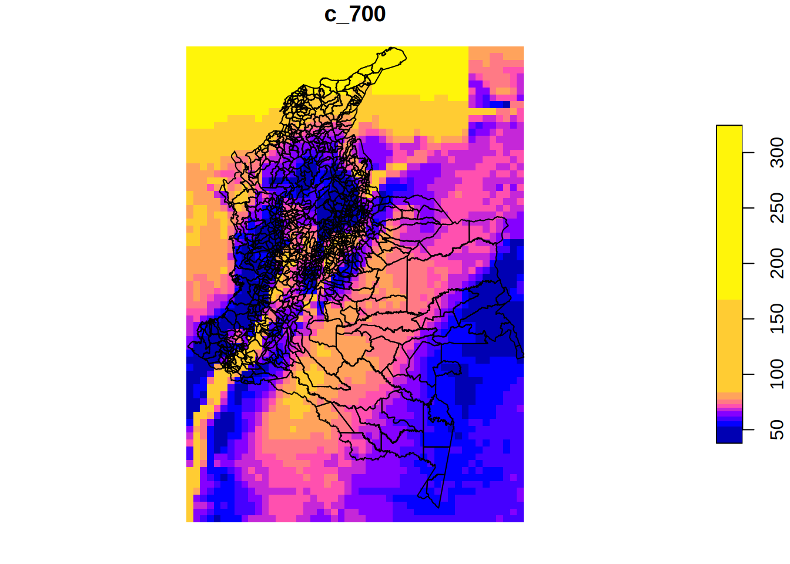
# Inicialización del contador en el entorno global
mycuenta <- 0
# Suponga una matriz de 3381 filas (geometrías) y 34 columnas (atributos)
mi_matriz <- matrix(1:114954, nrow = 3381, ncol = 34)
# Al aplicar sobre las filas (MARGIN = 1)
mi_resultado <- apply(mi_matriz, 1, function(st) {
# Lógica de conteo solicitada
mycuenta <<- mycuenta + 1
contar = mycuenta
# Asignación al entorno padre para persistencia
assign("mycuenta", contar, envir = parent.frame())
# Impresión condicional para verificar ejecución
# Nota: En este ejemplo, contar llegará a 3381.
# Se ajusta la condición para observar el inicio y el fin esperado.
if (contar == 1 | contar == 3381) {
print(paste("Ejecución número:", contar))
}
# 'st' es la fila actual (un vector de 34 elementos)
return(length(st))
})
# Verificación de resultados finales
length(mi_resultado)
head(mi_resultado)
tail(mi_resultado)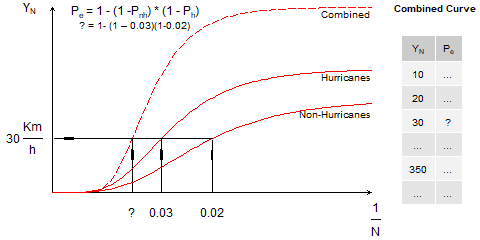
# #| eval: false
# Definimos una función para interpolar/extrapolar
# Entradas:
# x: valores del eje Y de la curva de amenaza
# Ej: Velocidad del viento --> 30 km/h
# y: Valores del eje X de la curva de amenaza (probabilidad):
# Ej: 0.1 --> Correspondiente a 10 años (1 / 0.1)
# xout: el valor específico de x que queremos consultar.
# ej: 30 Km/h
# Salida:
# yout: el valor interpolado (probabilidad)
# correspondiente a xout.
# ej: 0.165 --> Correspondiente a 16.5 años
# Nota: N = 1 / yout
# Importante: Hmisc no está instalado en el contenedor
#extrapola <- function(x, y, xout){
# yout=Hmisc::approxExtrap(x=x, y=y, xout=xout)$y
#}
# Función para extrapolar
extrapola_old <- function(x, y, xout) {
# Consolidación de duplicados (ties) para evitar advertencias de approx()
if (any(duplicated(x))) {
datos_unicos <- aggregate(y ~ x, data = data.frame(x = x, y = y), FUN = mean)
x <- datos_unicos$x
y <- datos_unicos$y
}
# Ordenamiento de los vectores de entrada
ord <- order(x)
x <- x[ord]
y <- y[ord]
n <- length(x)
# Inicialización del vector de salida
yout <- numeric(length(xout))
# Interpolación sobre valores únicos
# Interpolación lineal para valores dentro del rango [min(x), max(x)]
# La siguiente línea envía warnings por duplicados
# yout <- approx(x, y, xout)$y
# Use la siguiente línea (aceptando que duplicación en datos está bien)
# Sustituir la línea de interpolación original por:
yout <- suppressWarnings(approx(x, y, xout)$y)
# Identificación de índices fuera de rango
idx_inf <- which(xout < x[1])
idx_sup <- which(xout > x[n])
# Extrapolación lineal inferior (usando la pendiente de los dos primeros puntos)
if (length(idx_inf) > 0) {
slope_low <- (y[2] - y[1]) / (x[2] - x[1])
yout[idx_inf] <- y[1] + slope_low * (xout[idx_inf] - x[1])
}
# Extrapolación lineal superior (usando la pendiente de los dos últimos puntos)
if (length(idx_sup) > 0) {
slope_high <- (y[n] - y[n-1]) / (x[n] - x[n-1])
yout[idx_sup] <- y[n] + slope_high * (xout[idx_sup] - x[n])
}
return(yout)
}
# Función para extrapolar con controles de calidad ráster
extrapola <- function(x, y, xout) {
# 1. Limpieza estricta de valores ausentes (NAs)
idx_validos <- which(!is.na(x) & !is.na(y))
x <- x[idx_validos]
y <- y[idx_validos]
# 2. Control de longitud mínima
n <- length(x)
if (n == 0) {
# Si no hay datos, retorna vector de NAs de la misma longitud que xout
return(rep(NA, length(xout)))
}
if (n == 1) {
# Si solo hay un punto, es imposible extrapolar una pendiente.
# Se asume un comportamiento constante (flat-line).
return(rep(y[1], length(xout)))
}
# 3. Consolidación de duplicados (ties) para habilitar cálculo de pendientes
if (any(duplicated(x))) {
datos_unicos <- aggregate(y ~ x, data = data.frame(x = x, y = y), FUN = mean)
x <- datos_unicos$x
y <- datos_unicos$y
}
# 4. Ordenamiento de los vectores de entrada
ord <- order(x)
x <- x[ord]
y <- y[ord]
# Actualización de la longitud n tras la eliminación de duplicados
n <- length(x)
# Si tras eliminar duplicados queda solo 1 punto válido
if (n == 1) {
return(rep(y[1], length(xout)))
}
# Inicialización del vector de salida
yout <- numeric(length(xout))
# 5. Interpolación central
# approx() maneja valores dentro de [min(x), max(x)] y retorna NA por fuera
yout <- suppressWarnings(approx(x, y, xout)$y)
# 6. Identificación de índices fuera de rango (para extrapolación)
idx_inf <- which(xout < x[1])
idx_sup <- which(xout > x[n])
# 7. Extrapolación lineal inferior (pendiente de los dos primeros puntos)
if (length(idx_inf) > 0) {
slope_low <- (y[2] - y[1]) / (x[2] - x[1])
yout[idx_inf] <- y[1] + slope_low * (xout[idx_inf] - x[1])
}
# 8. Extrapolación lineal superior (pendiente de los dos últimos puntos)
if (length(idx_sup) > 0) {
slope_high <- (y[n] - y[n-1]) / (x[n] - x[n-1])
yout[idx_sup] <- y[n] + slope_high * (xout[idx_sup] - x[n])
}
return(yout)
}# #| eval: false
# Función para combinar información de viento de
# huracanes con información no huracanada usando
# la formula típica de combinación de curvas de amenaza
# p_c = (1 - ((1-p_h)*(1-p_nh)))
# dónde:
# p_c: probabilidad combinada del viento extremo
# p_h: probabilidad de viento de huracanes
# p_nh: probabilidad de viento no huracanado
# Entrada:
# - st: objeto stars
# - bands_rl_h: atributos correspondientes a las velocidades de huracanes
# - mri_h: periodos de retorno correspondientes a los atributos de
# las velocidades de huracanes
# - bands_rl_nh: atributos correspondientes a las velocidades de no huracanes
# - mri_nh: periodos de retorno correspondientes a los atributos de
# las velocidades de huracanes
# - mri_c: periodos de retorno a consultar de la curva de amenaza combinada
# Forma de aplicarse: st_apply
# Salida: niveles de retorno para los periodos
# de retorno consultados
combined_columns_st_apply_old <- function(
st, # Importante: El argumento recibe dinámicamente un vector de 34 posiciones
#
# Atributos del objeto stars
# correspondiente a vientos huracanados
bands_rl_h = c(13:23),
# Periodos de retorno (en años)
# correspondiente a atributos de vientos huracanados
mri_h = c(10,20,50,100,250,500,700,1000,1700,3000,7000),
# Atributos del objeto stars
# correspondiente a vientos no huracanados
bands_rl_nh = c(2:12), # atributos no-huracanes
# Periodos de retorno (en años)
# correspondiente a atributos de vientos no huracanados
mri_nh = c(10,20,50,100,250,500,700,1000,1700,3000,7000),
# Periodos de retorno (en años)
# a ser consultados en la curva combinada con la formula
mri_c = c(10,20,50,100,250,500,700,1000,1700,3000,7000)
) {
mycuenta <<- mycuenta + 1
contar = mycuenta
assign("mycuenta", contar, envir = parent.frame() )
if (contar == 1 | contar == 3381) {
print(paste("contar:", contar))
print(paste("mycuenta:", mycuenta))
}
# Hago una secuencia de 1 Km/h a 600 km/h
# para obtener los valores de probabilidad
# generando una curva detallada de amenaza
# a partir de interpolación
rl600 = seq(from=1, to=600, by=1)
#Hurricanes
# Para cada celda leo las velocidades
# y las almaceno en rl_h
rl_h = NULL
for (band in bands_rl_h) {
# Leo el valor de un atributo de huracanes
# en una celda y lo voy agregando a rl_h
# st[numero de atributo]: el valor de cada celda
# para el atributo "numero de atributo"
rl_h = c(rl_h, st[band])
# Recuerde que esta función será usada en st_apply
}
# Chequear si hay problemas de datos en los valores de
# velocidades almacados en rl_h
# Si es así: convierta todo a NA
if (any(!is.na(rl_h))){
if (sum(rl_h) == 0 | sum(rl_h) < 0) {
rl_h = rep(NA, length(bands_rl_h))
}
}
# Dataframe con curva de amenaza para huracanes:
# Solo los puntos iniciales:
# (mri_h = 10,25,50,100,250,500,700,1000,1700,2500,5000,10000)
# rl = Velocidad
# prob = 1/mri_h
h = data.frame(rl=rl_h, prob = 1/mri_h)
# Calcular las probabilidades
# correspondiente a las 600 velocidades (rl600 = 1:600)
# y almacenarla en hc_h_prob
# Si alguno de los datos de h es NA no utilice extrapola
# y almacene NA
if (any(is.na(h$rl)) | any(is.na(h$prob))){
hc_h_prob = rep(NA, length(rl600))
} else{
# Ingreso velocidades en xout
# Me devuelve probabilidades en hc_h_prob
hc_h_prob = extrapola(x=h$rl, y=h$prob, xout=rl600)
}
# Crear el dataframe con la curva de amenaza detallada
# rl = 1 a 600 km/h (velocidades)
# prob = probabilidades de extrapola
hc_h = data.frame(rl=rl600, prob=hc_h_prob)
# Chequeamos que las probabilidades no sean extremas
# Valor máximo es 1 y mínimo es 0
hc_h$prob[hc_h$prob < 0] = 0
hc_h$prob[hc_h$prob > 1] = 1
# No Huracanes
# Leemos las velocidades no huracanadas de cada celda
# y las almacenamos en rl_nh
rl_nh = NULL
for (band in bands_rl_nh) {
rl_nh = c(rl_nh, st[band])
}
# Si hay problemas en rl_nh con NAs:
# convierte todo a NAs
if (any(!is.na(rl_nh))){
if (sum(rl_nh) == 0 | sum(rl_nh) < 0) {
rl_nh = rep(NA, length(bands_rl_nh))
}
}
# Dataframe con curva de amenaza para no-huracanes:
# Solo los puntos iniciales:
# (mri_nh = 10,20,50,100,250,500,700,1000,1700,3000,7000)
# rl = Velocidad
# prob = 1/mri_nh
nh = data.frame(rl=rl_nh, prob = 1/mri_nh)
# Crear la curva de amenaza detallada
# usando interpola.
# Se ingresa 1 a 600 velocidades en Km/h
# y retorna las probabilidades (1/N)
# Si hay NAs, retorne todo con NAs
if (any(is.na(nh$rl)) | any(is.na(nh$prob))){
# Evitar extrapola
hc_nh_prob = rep(NA, length(rl600))
} else{
# Ninguno con NAs
# Ingreso las velocidades leídas de las celdas: nh$rl
# Ingreso las probabilidades (1/N, dónde N está en el
# nombre de los campos iniciales)
# Consolto 1 a 600 velocidades
# Retorno 600 correspondientes probabilidades
hc_nh_prob = extrapola(x=nh$rl, y=nh$prob, xout=rl600)
}
# Dataframe con la curva detallada
hc_nh = data.frame(rl=rl600, prob=hc_nh_prob)
# Le hago control de calidad a valores máximos y mínimos
# de probabilidades
hc_nh$prob[hc_nh$prob < 0] = 0
hc_nh$prob[hc_nh$prob > 1] = 1
# Combinar las dos curvas detalladas a partir de la formula
# Antes de combinar tenga en cuenta:
#1) no huracan (nh): no puede ser nulo en ningúna celda
#2) huracane (h): puede ser nulo en muchas celdas
# Crear la curva detallada con velocidades 1 a 600 Km/h
if (any(is.na(hc_h$prob)) | any(is.na(hc_h$rl))){
# Si alguno an no huracan es nulo, entonces
# toda la combinación es nula
hc_c_prob = hc_nh$prob
} else {
#p_c = (1 - ((1-p_h)*(1-p_nh)))
hc_c_prob = (1 - ((1-hc_h$prob)*(1-hc_nh$prob)))
}
# Creo el dataframe de la curva combinada detallada
hc_c = data.frame(rl=rl600, prob=hc_c_prob)
# Chequear valores extremos en probabilidades
# en este caso valores por debajo de cero
hc_c$prob[hc_c$prob<0] = 0
# Interpolar de esa curva combinada detallada
# ingresando las probabilidades de interés (1/mri_c)
# para obtener las velocidades
prob_c = 1/mri_c
if (any(is.na(hc_c$prob)) | any(is.na(hc_h$rl))){
# Si alguno es nulo, no interpole, devuelva NAs
rl_c_output = rep(NA, length(prob_c))
} else {
# Interpole ingresando probabildades y devolviendo
# velocidades (niveles de retorno)
rl_c_output = extrapola(x=hc_c$prob, y=hc_c$rl, xout=prob_c)
}
# Devuelva las velocidade correspondientes
# a la curva combinada
# y los periodos de retorno combinados mri_c
return (rl_c_output)
}
# Función diseñada para ser ejecutada iterativamente sobre un cubo de datos (stars)
# mediante st_apply. Calcula la probabilidad combinada de vientos extremos
# integrando regímenes huracanados y no huracanados.
combined_columns_st_apply <- function(
st,
bands_rl_h = c(13:23),
mri_h = c(10,20,50,100,250,500,700,1000,1700,3000,7000),
bands_rl_nh = c(2:12),
mri_nh = c(10,20,50,100,250,500,700,1000,1700,3000,7000),
mri_c = c(10,20,50,100,250,500,700,1000,1700,3000,7000)
) {
# ==============================================================================
# 1. Control de iteración y trazabilidad
# ==============================================================================
# Utiliza asignación global (<<-) para mantener el conteo a través de las
# llamadas internas de st_apply.
mycuenta <<- mycuenta + 1
contar = mycuenta
assign("mycuenta", contar, envir = parent.frame() )
if (contar == 1 | contar == 3381) {
print(paste("contar:", contar))
print(paste("mycuenta:", mycuenta))
}
# Definición del dominio de velocidades a evaluar (resolución de 1 km/h)
rl600 = seq(from=1, to=600, by=1)
# ==============================================================================
# 2. Procesamiento del régimen de vientos huracanados (H)
# ==============================================================================
# Extracción vectorial de las velocidades correspondientes a huracanes
rl_h = NULL
for (band in bands_rl_h) {
rl_h = c(rl_h, st[band])
}
# Control de calidad: detección de celdas anómalas (suma cero o negativa)
if (any(!is.na(rl_h))){
if (sum(rl_h) == 0 | sum(rl_h) < 0) {
rl_h = rep(NA, length(bands_rl_h))
}
}
# Construcción de la curva base y cálculo de interpolación directa
h = data.frame(rl=rl_h, prob = 1/mri_h)
if (any(is.na(h$rl)) | any(is.na(h$prob))){
hc_h_prob = rep(NA, length(rl600))
} else{
hc_h_prob = extrapola(x=h$rl, y=h$prob, xout=rl600)
}
# Acotamiento estricto de las probabilidades al dominio [0, 1]
hc_h = data.frame(rl=rl600, prob=hc_h_prob)
hc_h$prob[hc_h$prob < 0] = 0
hc_h$prob[hc_h$prob > 1] = 1
# ==============================================================================
# 3. Procesamiento del régimen de vientos no huracanados (NH)
# ==============================================================================
# Extracción vectorial de las velocidades correspondientes a no huracanes
rl_nh = NULL
for (band in bands_rl_nh) {
rl_nh = c(rl_nh, st[band])
}
# Control de calidad de la extracción
if (any(!is.na(rl_nh))){
if (sum(rl_nh) == 0 | sum(rl_nh) < 0) {
rl_nh = rep(NA, length(bands_rl_nh))
}
}
# Construcción de la curva base y cálculo de interpolación directa
nh = data.frame(rl=rl_nh, prob = 1/mri_nh)
if (any(is.na(nh$rl)) | any(is.na(nh$prob))){
hc_nh_prob = rep(NA, length(rl600))
} else{
hc_nh_prob = extrapola(x=nh$rl, y=nh$prob, xout=rl600)
}
# Acotamiento estricto de las probabilidades al dominio [0, 1]
hc_nh = data.frame(rl=rl600, prob=hc_nh_prob)
hc_nh$prob[hc_nh$prob < 0] = 0
hc_nh$prob[hc_nh$prob > 1] = 1
# ==============================================================================
# 4. Integración probabilística y resolución inversa
# ==============================================================================
# Aplicación del modelo conceptual de combinación probabilística.
# Si el régimen de huracanes es nulo (zonas interiores), la combinación asume
# íntegramente la forma de la curva no huracanada.
if (any(is.na(hc_h$prob))) {
hc_c_prob = hc_nh$prob
} else {
# Fórmula: Pc = 1 - ((1 - Ph) * (1 - Pnh))
hc_c_prob = (1 - ((1-hc_h$prob)*(1-hc_nh$prob)))
}
hc_c = data.frame(rl=rl600, prob=hc_c_prob)
# Control paramétrico crítico para evitar singularidades en la interpolación inversa.
# Al acotar previamente los valores a 0 y 1, se generan "colas planas" en la curva.
# Si se envían estas secuencias estáticas a la función de extrapolación inversa (prob -> velocidad),
# el agregador estadístico colapsa múltiples velocidades extremas en un único valor,
# destruyendo la trayectoria de la curva y forzando la superposición con el régimen de huracanes.
# La solución consiste en extraer exclusivamente la franja estrictamente monótona.
idx_validos = which(hc_c$prob > 0 & hc_c$prob < 1)
hc_c_clean = hc_c[idx_validos, ]
# Supresión de posibles duplicidades residuales para garantizar inyectividad
hc_c_clean = hc_c_clean[!duplicated(hc_c_clean$prob), ]
# Probabilidades objetivo derivadas de los periodos de retorno combinados solicitados
prob_c = 1/mri_c
# Validación matemática: Se requieren al menos dos nodos válidos para establecer una pendiente
# que permita ejecutar la interpolación espacial.
if (nrow(hc_c_clean) < 2) {
rl_c_output = rep(NA, length(prob_c))
} else {
# Interpolación inversa: se ingresa la probabilidad objetivo y se recupera la velocidad
rl_c_output = extrapola(x=hc_c_clean$prob, y=hc_c_clean$rl, xout=prob_c)
}
# Retorno del vector de 11 posiciones consolidado al motor de st_apply
return(rl_c_output)
}# #| eval: false
# Obtener datos vector y raster
# myurl = "http://geocorp.co/wind/hazard_curves.zip"
# filename = "hazard_curves.zip"
# download.file(myurl, filename, mode = "wb")
# unzip(filename)
# Nota: Carpeta de descarga:
# ./data_heavy/hazard_curves/
library(stars)
library(sf)
# library(xlsx) # depende de Java
library(readxl) # Estándar dentro de Tidiverse
library(stringr)
library(dplyr)
Attaching package: 'dplyr'The following objects are masked from 'package:stats':
filter, lagThe following objects are masked from 'package:base':
intersect, setdiff, setequal, unionlibrary(ggplot2)
# Ruta base
path = "./data_heavy/hazard_curves/"
# Nombre y ruta al archivo 10fg_jan1_2017.nc
# 10fg_jan1_2017.nc: variable 10fg de ERA5
# 10fg: 10 metre wind gust since previous post-processing
# https://ecmwf-models.readthedocs.io/en/latest/variables_era5.html
ncname <- "10fg_jan1_2017"
ncfile = paste0(path, ncname, ".nc", sep = "")
# Leemos el archivo 10fg_jan1_2017.nc
# Tiene un abtributo 10fg_jan1_2017.nc [m/s]
# y 3 dimensiones: x, y, time
st1 = read_stars(ncfile)
# Note que en time solo hay un valor
st1stars object with 3 dimensions and 1 attribute
attribute(s):
Min. 1st Qu. Median Mean 3rd Qu. Max.
10fg_jan1_2017.nc [m/s] 0.6118781 2.611887 3.524523 4.758072 5.092288 18.33795
dimension(s):
from to offset delta refsys x/y
x 1 49 -79.22 0.25 NA [x]
y 1 69 12.62 -0.25 NA [y]
time 1 1 1025616 [hours since 1900-01-01 00:00:00.0] NA udunits # Leemos los valores de X (longitud)
# y los valores de Y (latitud)
# Extracción de los vectores de valores de las dimensiones
lon <- st_get_dimension_values(st1, "x")
lat <- st_get_dimension_values(st1, "y")
head(lon)[1] -79.10 -78.85 -78.60 -78.35 -78.10 -77.85head(lat)[1] 12.50 12.25 12.00 11.75 11.50 11.25# Conteo de la cantidad de coordenadas
nlon <- length(lon)
nlon[1] 49nlat <- length(lat)
nlat[1] 69# Agregamos un atributo al objeto stars
# con el id (cellindexlr) de las celdas:
# Iniciando en la esquina superior izquierda,
# avanzando a la derecha, luego bajando en zig-zag
# Opción 1: Coerción explícita
# st1$cellindexlr <- as.integer(1:(nlon * nlat))
# Opción 2: Definición nativa como entero (más eficiente)
# Nota: Si time tuviese mas de un valor, la asignación del id
# requeriría nlon * nlat * ntime.
# Al asignar un vector de tamaño nlon * nlat, stars asume
# correctamente que el atributo se distribuye sobre las
# dimensiones espaciales x, y
st1$cellindexlr <- seq(1L, as.integer(nlon * nlat))
st1stars object with 3 dimensions and 2 attributes
attribute(s):
Min. 1st Qu. Median Mean
10fg_jan1_2017.nc [m/s] 0.6118781 2.611887 3.524523 4.758072
cellindexlr 1.0000000 846.000000 1691.000000 1691.000000
3rd Qu. Max.
10fg_jan1_2017.nc [m/s] 5.092288 18.33795
cellindexlr 2536.000000 3381.00000
dimension(s):
from to offset delta refsys x/y
x 1 49 -79.22 0.25 NA [x]
y 1 69 12.62 -0.25 NA [y]
time 1 1 1025616 [hours since 1900-01-01 00:00:00.0] NA udunits # A pesar que se previsualiza con id decimal
# los números están guardados como enteros:
head(st1$cellindexlr, 2), , 1
[,1] [,2] [,3] [,4] [,5] [,6] [,7] [,8] [,9] [,10] [,11] [,12] [,13] [,14]
[1,] 1 50 99 148 197 246 295 344 393 442 491 540 589 638
[2,] 2 51 100 149 198 247 296 345 394 443 492 541 590 639
[,15] [,16] [,17] [,18] [,19] [,20] [,21] [,22] [,23] [,24] [,25] [,26]
[1,] 687 736 785 834 883 932 981 1030 1079 1128 1177 1226
[2,] 688 737 786 835 884 933 982 1031 1080 1129 1178 1227
[,27] [,28] [,29] [,30] [,31] [,32] [,33] [,34] [,35] [,36] [,37] [,38]
[1,] 1275 1324 1373 1422 1471 1520 1569 1618 1667 1716 1765 1814
[2,] 1276 1325 1374 1423 1472 1521 1570 1619 1668 1717 1766 1815
[,39] [,40] [,41] [,42] [,43] [,44] [,45] [,46] [,47] [,48] [,49] [,50]
[1,] 1863 1912 1961 2010 2059 2108 2157 2206 2255 2304 2353 2402
[2,] 1864 1913 1962 2011 2060 2109 2158 2207 2256 2305 2354 2403
[,51] [,52] [,53] [,54] [,55] [,56] [,57] [,58] [,59] [,60] [,61] [,62]
[1,] 2451 2500 2549 2598 2647 2696 2745 2794 2843 2892 2941 2990
[2,] 2452 2501 2550 2599 2648 2697 2746 2795 2844 2893 2942 2991
[,63] [,64] [,65] [,66] [,67] [,68] [,69]
[1,] 3039 3088 3137 3186 3235 3284 3333
[2,] 3040 3089 3138 3187 3236 3285 3334tail(st1$cellindexlr, 2), , 1
[,1] [,2] [,3] [,4] [,5] [,6] [,7] [,8] [,9] [,10] [,11] [,12] [,13]
[48,] 48 97 146 195 244 293 342 391 440 489 538 587 636
[49,] 49 98 147 196 245 294 343 392 441 490 539 588 637
[,14] [,15] [,16] [,17] [,18] [,19] [,20] [,21] [,22] [,23] [,24] [,25]
[48,] 685 734 783 832 881 930 979 1028 1077 1126 1175 1224
[49,] 686 735 784 833 882 931 980 1029 1078 1127 1176 1225
[,26] [,27] [,28] [,29] [,30] [,31] [,32] [,33] [,34] [,35] [,36] [,37]
[48,] 1273 1322 1371 1420 1469 1518 1567 1616 1665 1714 1763 1812
[49,] 1274 1323 1372 1421 1470 1519 1568 1617 1666 1715 1764 1813
[,38] [,39] [,40] [,41] [,42] [,43] [,44] [,45] [,46] [,47] [,48] [,49]
[48,] 1861 1910 1959 2008 2057 2106 2155 2204 2253 2302 2351 2400
[49,] 1862 1911 1960 2009 2058 2107 2156 2205 2254 2303 2352 2401
[,50] [,51] [,52] [,53] [,54] [,55] [,56] [,57] [,58] [,59] [,60] [,61]
[48,] 2449 2498 2547 2596 2645 2694 2743 2792 2841 2890 2939 2988
[49,] 2450 2499 2548 2597 2646 2695 2744 2793 2842 2891 2940 2989
[,62] [,63] [,64] [,65] [,66] [,67] [,68] [,69]
[48,] 3037 3086 3135 3184 3233 3282 3331 3380
[49,] 3038 3087 3136 3185 3234 3283 3332 3381# Crear sf a partir de stars
sf1 = st_as_sf(st1)
# Cambiamos los nombres de los atributos)
names(sf1) = c("fg10_2017-01-01", "cellindexlr", "geometry")
sf1Simple feature collection with 3381 features and 2 fields
Geometry type: POLYGON
Dimension: XY
Bounding box: xmin: -79.225 ymin: -4.625 xmax: -66.975 ymax: 12.625
CRS: NA
First 10 features:
fg10_2017-01-01 cellindexlr geometry
1 13.87161 [m/s] 1 POLYGON ((-79.225 12.625, -...
2 14.18213 [m/s] 2 POLYGON ((-78.975 12.625, -...
3 14.64765 [m/s] 3 POLYGON ((-78.725 12.625, -...
4 14.91706 [m/s] 4 POLYGON ((-78.475 12.625, -...
5 15.00929 [m/s] 5 POLYGON ((-78.225 12.625, -...
6 14.94492 [m/s] 6 POLYGON ((-77.975 12.625, -...
7 14.75530 [m/s] 7 POLYGON ((-77.725 12.625, -...
8 14.63520 [m/s] 8 POLYGON ((-77.475 12.625, -...
9 14.63926 [m/s] 9 POLYGON ((-77.225 12.625, -...
10 14.79831 [m/s] 10 POLYGON ((-76.975 12.625, -...head(sf1, 1)Simple feature collection with 1 feature and 2 fields
Geometry type: POLYGON
Dimension: XY
Bounding box: xmin: -79.225 ymin: 12.375 xmax: -78.975 ymax: 12.625
CRS: NA
fg10_2017-01-01 cellindexlr geometry
1 13.87161 [m/s] 1 POLYGON ((-79.225 12.625, -...tail(sf1, 1)Simple feature collection with 1 feature and 2 fields
Geometry type: POLYGON
Dimension: XY
Bounding box: xmin: -67.225 ymin: -4.625 xmax: -66.975 ymax: -4.375
CRS: NA
fg10_2017-01-01 cellindexlr geometry
3381 2.748215 [m/s] 3381 POLYGON ((-67.225 -4.375, -...# Viento no huracanado proveniente de Excel
# Archivo: rlera5_original.xlsx
# Hoja: pp_pintar
# Lectura del archivo especificando la hoja
# Note que en la hoja, la primera columna es el id (cellindexlr)
# Número total de columnas 12
nhrl <- read_excel(paste0(path, "rlera5_original.xlsx"), sheet = "pp_pintar")
nhrl# A tibble: 3,381 × 12
cellindexlr nh_10 nh_20 nh_50 nh_100 nh_250 nh_500 nh_700 nh_1000 nh_1700
<dbl> <dbl> <dbl> <dbl> <dbl> <dbl> <dbl> <dbl> <dbl> <dbl>
1 1 75.7 78.3 81.7 84.3 87.7 90.2 91.5 92.8 94.8
2 2 76.5 78.9 82.2 84.7 87.9 90.4 91.6 92.9 94.8
3 3 77.6 80.2 83.7 86.3 89.8 92.4 93.6 95.0 97.0
4 4 78.4 80.9 84.3 86.9 90.3 92.8 94.1 95.4 97.4
5 5 79.4 82.0 85.5 88.2 91.7 94.3 95.6 96.9 99.0
6 6 80.1 82.7 86.2 88.8 92.3 94.9 96.1 97.5 99.5
7 7 80.6 83.1 86.5 89.0 92.4 94.9 96.1 97.4 99.4
8 8 81.3 83.8 87.2 89.7 93.0 95.5 96.7 98.0 99.9
9 9 82.2 84.7 88.0 90.6 93.9 96.4 97.6 98.9 101.
10 10 82.5 85.0 88.3 90.7 94.0 96.5 97.7 98.9 101.
# ℹ 3,371 more rows
# ℹ 2 more variables: nh_3000 <dbl>, nh_7000 <dbl>class(nhrl)[1] "tbl_df" "tbl" "data.frame"head(nhrl, 1)# A tibble: 1 × 12
cellindexlr nh_10 nh_20 nh_50 nh_100 nh_250 nh_500 nh_700 nh_1000 nh_1700
<dbl> <dbl> <dbl> <dbl> <dbl> <dbl> <dbl> <dbl> <dbl> <dbl>
1 1 75.7 78.3 81.7 84.3 87.7 90.2 91.5 92.8 94.8
# ℹ 2 more variables: nh_3000 <dbl>, nh_7000 <dbl>tail(nhrl, 1)# A tibble: 1 × 12
cellindexlr nh_10 nh_20 nh_50 nh_100 nh_250 nh_500 nh_700 nh_1000 nh_1700
<dbl> <dbl> <dbl> <dbl> <dbl> <dbl> <dbl> <dbl> <dbl> <dbl>
1 3381 49.9 51.8 54.3 56.1 58.6 60.5 61.4 62.4 63.8
# ℹ 2 more variables: nh_3000 <dbl>, nh_7000 <dbl># Conversión del índice de celda a tipo entero
nhrl$cellindexlr <- as.integer(nhrl$cellindexlr)
# Unir el sf (sf1) con el tibble (tbl) data-frame (data.frame)
# El resultado es un objeto sf (sf_nh)
# En el siguiente comando
# 1) convierto sf1 a data-frame quitándole la columna espacial
# sf1[,1:2, drop=TRUE]
# 2) filtro el tibble data-frame para no incluir la columna cellindexlr
# 3) creo un nuevo sf al unir los dos dataframes y definir la geometría
# sf_nh = st_sf(sf1[,1:2, drop=TRUE], nhrl[,2:12], geometry=sf1$geometry)
# La mejor forma de unirlos con dplyr
# Unión relacional utilizando cellindexlr como clave
sf_nh <- sf1 %>%
left_join(nhrl, by = "cellindexlr")
sf_nhSimple feature collection with 3381 features and 13 fields
Geometry type: POLYGON
Dimension: XY
Bounding box: xmin: -79.225 ymin: -4.625 xmax: -66.975 ymax: 12.625
CRS: NA
First 10 features:
fg10_2017-01-01 cellindexlr nh_10 nh_20 nh_50 nh_100 nh_250
1 13.87161 [m/s] 1 75.72014 78.28825 81.68854 84.25276 87.65665
2 14.18213 [m/s] 2 76.46347 78.91182 82.18571 84.66843 87.91439
3 14.64765 [m/s] 3 77.62283 80.22663 83.68861 86.29951 89.75322
4 14.91706 [m/s] 4 78.37462 80.91716 84.32186 86.87185 90.26838
5 15.00929 [m/s] 5 79.37354 81.99186 85.52263 88.15294 91.66611
6 14.94492 [m/s] 6 80.05098 82.69864 86.15614 88.78780 92.25871
7 14.75530 [m/s] 7 80.56784 83.08279 86.46334 88.97281 92.35583
8 14.63520 [m/s] 8 81.32401 83.83072 87.15182 89.68132 92.97866
9 14.63926 [m/s] 9 82.18675 84.71093 88.00640 90.55442 93.86172
10 14.79831 [m/s] 10 82.54443 84.97964 88.26406 90.73376 93.97091
nh_500 nh_700 nh_1000 nh_1700 nh_3000 nh_7000
1 90.21695 91.47602 92.78860 94.75805 96.85565 99.98178
2 90.40638 91.60661 92.86180 94.76200 96.78484 99.80348
3 92.37109 93.64076 94.95989 96.96049 99.10851 102.31902
4 92.82592 94.05573 95.39945 97.35954 99.46221 102.59421
5 94.31032 95.60011 96.93849 98.96194 101.14068 104.39211
6 94.87477 96.14925 97.51714 99.52656 101.67428 104.86907
7 94.88001 96.10953 97.43680 99.37884 101.46173 104.56580
8 95.52521 96.73947 98.00697 99.94006 101.99369 105.07641
9 96.39080 97.61264 98.88799 100.81980 102.87488 105.94081
10 96.46839 97.66360 98.91296 100.81227 102.83212 105.84655
geometry
1 POLYGON ((-79.225 12.625, -...
2 POLYGON ((-78.975 12.625, -...
3 POLYGON ((-78.725 12.625, -...
4 POLYGON ((-78.475 12.625, -...
5 POLYGON ((-78.225 12.625, -...
6 POLYGON ((-77.975 12.625, -...
7 POLYGON ((-77.725 12.625, -...
8 POLYGON ((-77.475 12.625, -...
9 POLYGON ((-77.225 12.625, -...
10 POLYGON ((-76.975 12.625, -...# 13 columnas + geometry
names(sf_nh) [1] "fg10_2017-01-01" "cellindexlr" "nh_10" "nh_20"
[5] "nh_50" "nh_100" "nh_250" "nh_500"
[9] "nh_700" "nh_1000" "nh_1700" "nh_3000"
[13] "nh_7000" "geometry" head(sf_nh, 1)Simple feature collection with 1 feature and 13 fields
Geometry type: POLYGON
Dimension: XY
Bounding box: xmin: -79.225 ymin: 12.375 xmax: -78.975 ymax: 12.625
CRS: NA
fg10_2017-01-01 cellindexlr nh_10 nh_20 nh_50 nh_100 nh_250
1 13.87161 [m/s] 1 75.72014 78.28825 81.68854 84.25276 87.65665
nh_500 nh_700 nh_1000 nh_1700 nh_3000 nh_7000
1 90.21695 91.47602 92.7886 94.75805 96.85565 99.98178
geometry
1 POLYGON ((-79.225 12.625, -...tail(sf_nh, 1)Simple feature collection with 1 feature and 13 fields
Geometry type: POLYGON
Dimension: XY
Bounding box: xmin: -67.225 ymin: -4.625 xmax: -66.975 ymax: -4.375
CRS: NA
fg10_2017-01-01 cellindexlr nh_10 nh_20 nh_50 nh_100 nh_250
3381 2.748215 [m/s] 3381 49.91132 51.80007 54.28018 56.13869 58.63909
nh_500 nh_700 nh_1000 nh_1700 nh_3000 nh_7000
3381 60.5148 61.42218 62.38455 63.80741 65.35219 67.64552
geometry
3381 POLYGON ((-67.225 -4.375, -...# Ver el periodo de retorno 7000 años: nh_700
plot(sf_nh[,"nh_700"], key.pos = 1, reset=FALSE)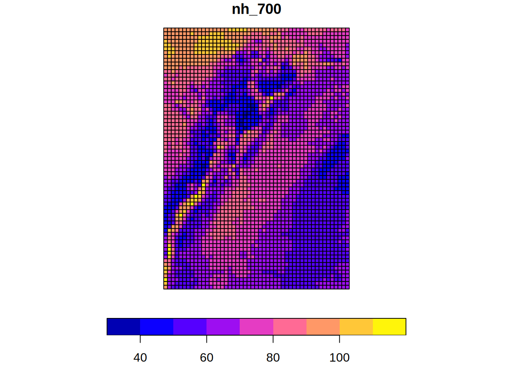
# Convertir sf a stars
# Vientos no huracanados:
# Cubo vectorial + raster (sf + stars)
st_nh = st_as_stars(sf_nh)
st_nhstars object with 1 dimensions and 13 attributes
attribute(s):
Min. 1st Qu. Median Mean 3rd Qu.
fg10_2017-01-01 0.6118781 2.611887 3.524523 4.758072 5.092288
cellindexlr 1.0000000 846.000000 1691.000000 1691.000000 2536.000000
nh_10 30.4555737 47.296257 54.978468 56.002591 62.597269
nh_20 31.4608151 48.988711 57.361577 58.115121 65.058261
nh_50 32.7741918 51.447709 60.473361 60.908016 68.323512
nh_100 33.7783566 53.169823 62.714901 63.020511 70.731572
nh_250 35.0545484 55.535905 65.669633 65.812625 73.793116
nh_500 36.0606722 57.320402 67.832035 67.925328 76.137680
nh_700 36.5523539 58.162892 68.821613 68.950810 77.352559
nh_1000 36.9211151 59.113567 69.892419 70.038594 78.628009
nh_1700 37.6162890 60.487716 71.470053 71.655338 80.400821
nh_3000 38.1215639 61.897488 73.101004 73.386625 82.454577
nh_7000 38.9009237 63.979722 75.635645 75.968756 85.413359
Max.
fg10_2017-01-01 18.33795
cellindexlr 3381.00000
nh_10 93.30645
nh_20 97.62114
nh_50 103.31804
nh_100 107.63102
nh_250 113.32841
nh_500 117.64088
nh_700 119.73103
nh_1000 121.93811
nh_1700 125.24810
nh_3000 128.78034
nh_7000 134.03886
dimension(s):
from to point
geometry 1 3381 FALSE
values
geometry POLYGON ((-79.225 12.625,...,...,POLYGON ((-67.225 -4.375,...# Consulta de la estructura de dimensiones
st_dimensions(st_nh) from to point
geometry 1 3381 FALSE
values
geometry POLYGON ((-79.225 12.625,...,...,POLYGON ((-67.225 -4.375,...# Consulta de los atributos disponibles
names(st_nh) [1] "fg10_2017-01-01" "cellindexlr" "nh_10" "nh_20"
[5] "nh_50" "nh_100" "nh_250" "nh_500"
[9] "nh_700" "nh_1000" "nh_1700" "nh_3000"
[13] "nh_7000" # #| eval: false
#VIENTOS HURACANADOS DE ARCHIVOS TIF
# Listar los archivos en la carpeta ./data_heavy/hazard_curves/
# y ordenarlos por el numero que hay en su nombre: st1 hasta st_32
rasterfiles <- list.files(path = path, pattern = "*.*.tif$")
rasterfiles <- paste0(path, rasterfiles)
rasterfiles <- str_sort(rasterfiles, numeric = TRUE)
#"./data_heavy/hazard_curves/st1_cellindexlr.tif"
head(rasterfiles)[1] "./data_heavy/hazard_curves/st1_cellindexlr.tif"
[2] "./data_heavy/hazard_curves/st22_h_10.tif"
[3] "./data_heavy/hazard_curves/st23_h_20.tif"
[4] "./data_heavy/hazard_curves/st24_h_50.tif"
[5] "./data_heavy/hazard_curves/st25_h_100.tif"
[6] "./data_heavy/hazard_curves/st26_h_250.tif" #"./data_heavy/hazard_curves/st32_h_7000.tif"
tail(rasterfiles)[1] "./data_heavy/hazard_curves/st27_h_500.tif"
[2] "./data_heavy/hazard_curves/st28_h_700.tif"
[3] "./data_heavy/hazard_curves/st29_h_1000.tif"
[4] "./data_heavy/hazard_curves/st30_h_1700.tif"
[5] "./data_heavy/hazard_curves/st31_h_3000.tif"
[6] "./data_heavy/hazard_curves/st32_h_7000.tif"# Leo los archivos TIF del vector tipo string con nombres
st_h <- read_stars(rasterfiles, quiet = TRUE)
mynames <- names(st_h)
# Nota: stars elimina el LCP (Longest Common Prefix)
# para asignar los nombres
#'1_cellindexlr.tif'
head(mynames)[1] "1_cellindexlr.tif" "22_h_10.tif" "23_h_20.tif"
[4] "24_h_50.tif" "25_h_100.tif" "26_h_250.tif" #"32_h_7000.tif"
tail(mynames)[1] "27_h_500.tif" "28_h_700.tif" "29_h_1000.tif" "30_h_1700.tif"
[5] "31_h_3000.tif" "32_h_7000.tif"st_hstars object with 2 dimensions and 12 attributes
attribute(s):
Min. 1st Qu. Median Mean 3rd Qu.
1_cellindexlr.tif 1.000000 846.00000 1691.00000 1691.00000 2536.00000
22_h_10.tif 9.657264 15.60407 23.24976 30.49505 41.01136
23_h_20.tif 12.285217 22.10538 30.73002 42.99571 62.58664
24_h_50.tif 16.887383 27.95969 44.80460 61.98091 86.10312
25_h_100.tif 21.482809 33.50370 59.56685 76.71314 110.83393
26_h_250.tif 24.047953 42.12089 67.86799 94.92491 150.90559
27_h_500.tif 26.153105 50.09246 75.44077 108.12435 174.92483
28_h_700.tif 27.240479 54.71663 78.70475 114.44337 182.41410
29_h_1000.tif 28.442543 59.71330 82.73916 121.15120 190.39574
30_h_1700.tif 30.329725 62.42528 89.77281 131.28288 202.57220
31_h_3000.tif 32.488724 65.18401 96.70774 142.38969 215.88116
32_h_7000.tif 35.998379 69.53368 109.49970 159.79013 237.64427
Max. NA's
1_cellindexlr.tif 3381.00000 0
22_h_10.tif 84.59554 2274
23_h_20.tif 134.10271 2274
24_h_50.tif 188.30650 2274
25_h_100.tif 217.23434 2274
26_h_250.tif 262.40466 2274
27_h_500.tif 302.71555 2274
28_h_700.tif 324.46051 2274
29_h_1000.tif 349.21902 2274
30_h_1700.tif 389.59143 2274
31_h_3000.tif 437.99152 2274
32_h_7000.tif 478.45761 2274
dimension(s):
from to offset delta refsys point x/y
x 1 49 -79.1 0.25 WGS 84 FALSE [x]
y 1 69 12.5 -0.25 WGS 84 FALSE [y]# Eliminaremos "1_" y ".tif" en los nombres
# Localizo la posición de "_" en el nombre
start <- str_locate(mynames, "_")
# Localizo la posición de "." en el nombre
stop <- str_locate(mynames, "\\.")
# Extraigo el nuevo nombre de los atributos del objeto stars
# usando la posición inicial de "_" (sin incluirlo: +1)
# y la posición final de "." (sin incluirlo: -1)
mynames <- str_sub(mynames, start = start[, 1] + 1, end = stop[, 1] - 1)
# 'cellindexlr'
head(mynames)[1] "cellindexlr" "h_10" "h_20" "h_50" "h_100"
[6] "h_250" # 'h_7000'
tail(mynames)[1] "h_500" "h_700" "h_1000" "h_1700" "h_3000" "h_7000"# Cambio de nombres del objeto stars
st_h <- setNames(st_h, mynames)
# Objeto stars con dimensiones X, Y
st_hstars object with 2 dimensions and 12 attributes
attribute(s):
Min. 1st Qu. Median Mean 3rd Qu. Max.
cellindexlr 1.000000 846.00000 1691.00000 1691.00000 2536.00000 3381.00000
h_10 9.657264 15.60407 23.24976 30.49505 41.01136 84.59554
h_20 12.285217 22.10538 30.73002 42.99571 62.58664 134.10271
h_50 16.887383 27.95969 44.80460 61.98091 86.10312 188.30650
h_100 21.482809 33.50370 59.56685 76.71314 110.83393 217.23434
h_250 24.047953 42.12089 67.86799 94.92491 150.90559 262.40466
h_500 26.153105 50.09246 75.44077 108.12435 174.92483 302.71555
h_700 27.240479 54.71663 78.70475 114.44337 182.41410 324.46051
h_1000 28.442543 59.71330 82.73916 121.15120 190.39574 349.21902
h_1700 30.329725 62.42528 89.77281 131.28288 202.57220 389.59143
h_3000 32.488724 65.18401 96.70774 142.38969 215.88116 437.99152
h_7000 35.998379 69.53368 109.49970 159.79013 237.64427 478.45761
NA's
cellindexlr 0
h_10 2274
h_20 2274
h_50 2274
h_100 2274
h_250 2274
h_500 2274
h_700 2274
h_1000 2274
h_1700 2274
h_3000 2274
h_7000 2274
dimension(s):
from to offset delta refsys point x/y
x 1 49 -79.1 0.25 WGS 84 FALSE [x]
y 1 69 12.5 -0.25 WGS 84 FALSE [y]names(st_h) [1] "cellindexlr" "h_10" "h_20" "h_50" "h_100"
[6] "h_250" "h_500" "h_700" "h_1000" "h_1700"
[11] "h_3000" "h_7000" # Cambiar las dimensiones X, Y del objeto stars a geometrías (polígonos)
# Nota: Nuestro primer cubo multidimensional vectorial (stars + sf)
# Las celdas raster se convierten en polígonos!
st_h.stnoxy <- st_xy2sfc(st_h, as_points = FALSE, na.rm = TRUE)
st_h.stnoxystars object with 1 dimensions and 12 attributes
attribute(s):
Min. 1st Qu. Median Mean 3rd Qu. Max.
cellindexlr 1.000000 846.00000 1691.00000 1691.00000 2536.00000 3381.00000
h_10 9.657264 15.60407 23.24976 30.49505 41.01136 84.59554
h_20 12.285217 22.10538 30.73002 42.99571 62.58664 134.10271
h_50 16.887383 27.95969 44.80460 61.98091 86.10312 188.30650
h_100 21.482809 33.50370 59.56685 76.71314 110.83393 217.23434
h_250 24.047953 42.12089 67.86799 94.92491 150.90559 262.40466
h_500 26.153105 50.09246 75.44077 108.12435 174.92483 302.71555
h_700 27.240479 54.71663 78.70475 114.44337 182.41410 324.46051
h_1000 28.442543 59.71330 82.73916 121.15120 190.39574 349.21902
h_1700 30.329725 62.42528 89.77281 131.28288 202.57220 389.59143
h_3000 32.488724 65.18401 96.70774 142.38969 215.88116 437.99152
h_7000 35.998379 69.53368 109.49970 159.79013 237.64427 478.45761
NA's
cellindexlr 0
h_10 2274
h_20 2274
h_50 2274
h_100 2274
h_250 2274
h_500 2274
h_700 2274
h_1000 2274
h_1700 2274
h_3000 2274
h_7000 2274
dimension(s):
from to refsys point
geometry 1 3381 WGS 84 FALSE
values
geometry POLYGON ((-79.1 12.5, -78...,...,POLYGON ((-67.1 -4.5, -66...names(st_h.stnoxy) [1] "cellindexlr" "h_10" "h_20" "h_50" "h_100"
[6] "h_250" "h_500" "h_700" "h_1000" "h_1700"
[11] "h_3000" "h_7000" # Convertir stars a sf de polígonos
# Vientos huracanados
sf_h = st_as_sf(st_h, as_points=FALSE, merge =FALSE)
sf_hSimple feature collection with 3381 features and 12 fields
Geometry type: POLYGON
Dimension: XY
Bounding box: xmin: -79.1 ymin: -4.75 xmax: -66.85 ymax: 12.5
Geodetic CRS: WGS 84
First 10 features:
cellindexlr h_10 h_20 h_50 h_100 h_250 h_500 h_700
1 1 68.47093 91.80773 135.3448 171.5632 195.1727 215.1678 225.6001
2 2 68.58443 92.01710 135.7074 171.4681 193.8547 212.9895 222.9478
3 3 68.76575 92.35615 136.3943 171.7126 193.7527 212.5089 222.2578
4 4 68.90208 92.57769 136.8144 171.8713 193.7814 212.2229 221.8297
5 5 68.93599 92.61635 136.8426 171.8625 193.7243 212.0914 221.6260
6 6 68.92827 92.52505 136.5486 171.7202 193.5764 211.9407 221.4796
7 7 68.84084 92.23818 135.7941 171.3774 193.4134 212.1663 221.9144
8 8 68.65591 91.89215 135.0937 171.1369 193.6052 212.5893 222.4649
9 9 68.42961 91.55302 134.5247 170.9932 193.7937 213.0403 223.0611
10 10 68.20250 91.55264 135.4870 171.6696 194.9442 214.6250 224.8830
h_1000 h_1700 h_3000 h_7000 geometry
1 237.2115 255.6010 276.8677 312.1155 POLYGON ((-79.1 12.5, -78.8...
2 234.0130 251.4990 271.7078 305.6339 POLYGON ((-78.85 12.5, -78....
3 233.0808 250.1652 269.9935 303.6305 POLYGON ((-78.6 12.5, -78.3...
4 232.4885 249.3008 268.7823 301.8512 POLYGON ((-78.35 12.5, -78....
5 232.2042 248.8830 268.0656 299.4638 POLYGON ((-78.1 12.5, -77.8...
6 232.0611 248.7461 267.9371 299.3519 POLYGON ((-77.85 12.5, -77....
7 232.7374 249.8232 269.5042 301.7819 POLYGON ((-77.6 12.5, -77.3...
8 233.4349 250.7640 270.7427 303.5460 POLYGON ((-77.35 12.5, -77....
9 234.1985 251.8052 272.1206 305.5126 POLYGON ((-77.1 12.5, -76.8...
10 236.2927 254.3471 275.2037 309.5378 POLYGON ((-76.85 12.5, -76....# 12 columnas + geometry
names(sf_h) [1] "cellindexlr" "h_10" "h_20" "h_50" "h_100"
[6] "h_250" "h_500" "h_700" "h_1000" "h_1700"
[11] "h_3000" "h_7000" "geometry" # Plotear (sf) el período de retorno igual a 700 años (h_700)
plot(sf_h[,"h_700"], key.pos = 1, reset=FALSE)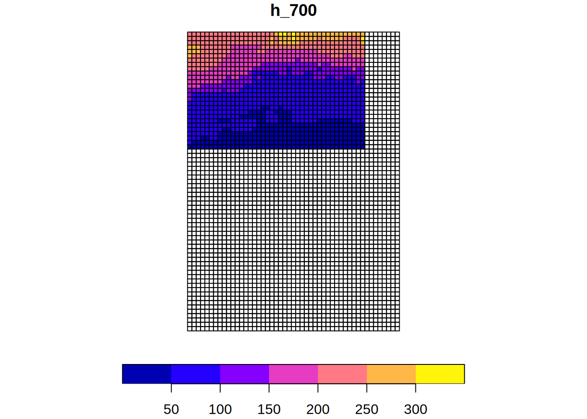
# Integrar información de vientos huracanados y no huracanados
# en un data-frame. Del primer sf removemos la primera columna
# "fg10_2017-01-01" y del segundo removemos "cellindexlr" porque
# ya se incluye en el primero. Se elimina la columna geometry.
# Importante: Basado en el orden de filas de ambos objetos
# df_nh_h = cbind(sf_nh[ ,2:13, drop=TRUE], sf_h[, 2:12, drop=TRUE])
# Alternativa de integración de vientos huracanados
# y no huracanados.
# Importante: Basado en el orden de filas de ambos objetos
#df_nh_h <- sf_nh %>%
# st_drop_geometry() %>%
# select(-"fg10_2017-01-01") %>% # Remoción de la primera variable meteorológica
# bind_cols(
# sf_h %>%
# st_drop_geometry() %>%
# select(-cellindexlr) # Remoción de clave redundante
# )
# Unión relacional basada en cellindexlr con manejo seguro de columnas
df_nh_h <- sf_nh %>%
st_drop_geometry() %>%
select(-any_of("fg10_2017-01-01")) %>%
left_join(
sf_h %>%
st_drop_geometry(),
by = "cellindexlr"
)
colnames(df_nh_h) [1] "cellindexlr" "nh_10" "nh_20" "nh_50" "nh_100"
[6] "nh_250" "nh_500" "nh_700" "nh_1000" "nh_1700"
[11] "nh_3000" "nh_7000" "h_10" "h_20" "h_50"
[16] "h_100" "h_250" "h_500" "h_700" "h_1000"
[21] "h_1700" "h_3000" "h_7000" head(df_nh_h) cellindexlr nh_10 nh_20 nh_50 nh_100 nh_250 nh_500 nh_700
1 1 75.72014 78.28825 81.68854 84.25276 87.65665 90.21695 91.47602
2 2 76.46347 78.91182 82.18571 84.66843 87.91439 90.40638 91.60661
3 3 77.62283 80.22663 83.68861 86.29951 89.75322 92.37109 93.64076
4 4 78.37462 80.91716 84.32186 86.87185 90.26838 92.82592 94.05573
5 5 79.37354 81.99186 85.52263 88.15294 91.66611 94.31032 95.60011
6 6 80.05098 82.69864 86.15614 88.78780 92.25871 94.87477 96.14925
nh_1000 nh_1700 nh_3000 nh_7000 h_10 h_20 h_50 h_100
1 92.78860 94.75805 96.85565 99.98178 68.47093 91.80773 135.3448 171.5632
2 92.86180 94.76200 96.78484 99.80348 68.58443 92.01710 135.7074 171.4681
3 94.95989 96.96049 99.10851 102.31902 68.76575 92.35615 136.3943 171.7126
4 95.39945 97.35954 99.46221 102.59421 68.90208 92.57769 136.8144 171.8713
5 96.93849 98.96194 101.14068 104.39211 68.93599 92.61635 136.8426 171.8625
6 97.51714 99.52656 101.67428 104.86907 68.92827 92.52505 136.5486 171.7202
h_250 h_500 h_700 h_1000 h_1700 h_3000 h_7000
1 195.1727 215.1678 225.6001 237.2115 255.6010 276.8677 312.1155
2 193.8547 212.9895 222.9478 234.0130 251.4990 271.7078 305.6339
3 193.7527 212.5089 222.2578 233.0808 250.1652 269.9935 303.6305
4 193.7814 212.2229 221.8297 232.4885 249.3008 268.7823 301.8512
5 193.7243 212.0914 221.6260 232.2042 248.8830 268.0656 299.4638
6 193.5764 211.9407 221.4796 232.0611 248.7461 267.9371 299.3519# Combinaremos la información de huracanes y no huracanes
# usando la formula proveída en la siguiente grárica
# Carga del recurso gráfico
knitr::include_graphics(paste0(path, "concept.png"))
# Al data-frame con toda la información (h, nh)
# agregaremos columnas vacías para la combinación "c_"
df_nh_h$c_10 = NA
df_nh_h$c_20 = NA
df_nh_h$c_50 = NA
df_nh_h$c_100 = NA
df_nh_h$c_250 = NA
df_nh_h$c_500 = NA
df_nh_h$c_700 = NA
df_nh_h$c_1000 = NA
df_nh_h$c_1700 = NA
df_nh_h$c_3000 = NA
df_nh_h$c_7000 = NA
# Creamos el sf para
# - viento no huracanado (nh),
# - viento huracanado (h)
# - la combinación (vacío por el momento) (c)
sf_nh_h_c = st_sf(df_nh_h, geometry=sf_nh$geometry)
colnames(sf_nh_h_c) [1] "cellindexlr" "nh_10" "nh_20" "nh_50" "nh_100"
[6] "nh_250" "nh_500" "nh_700" "nh_1000" "nh_1700"
[11] "nh_3000" "nh_7000" "h_10" "h_20" "h_50"
[16] "h_100" "h_250" "h_500" "h_700" "h_1000"
[21] "h_1700" "h_3000" "h_7000" "c_10" "c_20"
[26] "c_50" "c_100" "c_250" "c_500" "c_700"
[31] "c_1000" "c_1700" "c_3000" "c_7000" "geometry" head(sf_nh_h_c)Simple feature collection with 6 features and 34 fields
Geometry type: POLYGON
Dimension: XY
Bounding box: xmin: -79.225 ymin: 12.375 xmax: -77.725 ymax: 12.625
CRS: NA
cellindexlr nh_10 nh_20 nh_50 nh_100 nh_250 nh_500 nh_700
1 1 75.72014 78.28825 81.68854 84.25276 87.65665 90.21695 91.47602
2 2 76.46347 78.91182 82.18571 84.66843 87.91439 90.40638 91.60661
3 3 77.62283 80.22663 83.68861 86.29951 89.75322 92.37109 93.64076
4 4 78.37462 80.91716 84.32186 86.87185 90.26838 92.82592 94.05573
5 5 79.37354 81.99186 85.52263 88.15294 91.66611 94.31032 95.60011
6 6 80.05098 82.69864 86.15614 88.78780 92.25871 94.87477 96.14925
nh_1000 nh_1700 nh_3000 nh_7000 h_10 h_20 h_50 h_100
1 92.78860 94.75805 96.85565 99.98178 68.47093 91.80773 135.3448 171.5632
2 92.86180 94.76200 96.78484 99.80348 68.58443 92.01710 135.7074 171.4681
3 94.95989 96.96049 99.10851 102.31902 68.76575 92.35615 136.3943 171.7126
4 95.39945 97.35954 99.46221 102.59421 68.90208 92.57769 136.8144 171.8713
5 96.93849 98.96194 101.14068 104.39211 68.93599 92.61635 136.8426 171.8625
6 97.51714 99.52656 101.67428 104.86907 68.92827 92.52505 136.5486 171.7202
h_250 h_500 h_700 h_1000 h_1700 h_3000 h_7000 c_10 c_20 c_50
1 195.1727 215.1678 225.6001 237.2115 255.6010 276.8677 312.1155 NA NA NA
2 193.8547 212.9895 222.9478 234.0130 251.4990 271.7078 305.6339 NA NA NA
3 193.7527 212.5089 222.2578 233.0808 250.1652 269.9935 303.6305 NA NA NA
4 193.7814 212.2229 221.8297 232.4885 249.3008 268.7823 301.8512 NA NA NA
5 193.7243 212.0914 221.6260 232.2042 248.8830 268.0656 299.4638 NA NA NA
6 193.5764 211.9407 221.4796 232.0611 248.7461 267.9371 299.3519 NA NA NA
c_100 c_250 c_500 c_700 c_1000 c_1700 c_3000 c_7000
1 NA NA NA NA NA NA NA NA
2 NA NA NA NA NA NA NA NA
3 NA NA NA NA NA NA NA NA
4 NA NA NA NA NA NA NA NA
5 NA NA NA NA NA NA NA NA
6 NA NA NA NA NA NA NA NA
geometry
1 POLYGON ((-79.225 12.625, -...
2 POLYGON ((-78.975 12.625, -...
3 POLYGON ((-78.725 12.625, -...
4 POLYGON ((-78.475 12.625, -...
5 POLYGON ((-78.225 12.625, -...
6 POLYGON ((-77.975 12.625, -...# Conversión del objeto sf a formato stars
st_nh_h_c <- st_as_stars(sf_nh_h_c)
head(st_nh_h_c)stars object with 1 dimensions and 6 attributes
attribute(s):
Min. 1st Qu. Median Mean 3rd Qu. Max.
cellindexlr 1.00000 846.00000 1691.00000 1691.00000 2536.00000 3381.00000
nh_10 30.45557 47.29626 54.97847 56.00259 62.59727 93.30645
nh_20 31.46082 48.98871 57.36158 58.11512 65.05826 97.62114
nh_50 32.77419 51.44771 60.47336 60.90802 68.32351 103.31804
nh_100 33.77836 53.16982 62.71490 63.02051 70.73157 107.63102
nh_250 35.05455 55.53590 65.66963 65.81263 73.79312 113.32841
dimension(s):
from to point
geometry 1 3381 FALSE
values
geometry POLYGON ((-79.225 12.625,...,...,POLYGON ((-67.225 -4.375,...st_nh_h_cstars object with 1 dimensions and 34 attributes
attribute(s):
cellindexlr nh_10 nh_20 nh_50
Min. : 1 Min. :30.46 Min. :31.46 Min. : 32.77
1st Qu.: 846 1st Qu.:47.30 1st Qu.:48.99 1st Qu.: 51.45
Median :1691 Median :54.98 Median :57.36 Median : 60.47
Mean :1691 Mean :56.00 Mean :58.12 Mean : 60.91
3rd Qu.:2536 3rd Qu.:62.60 3rd Qu.:65.06 3rd Qu.: 68.32
Max. :3381 Max. :93.31 Max. :97.62 Max. :103.32
nh_100 nh_250 nh_500 nh_700
Min. : 33.78 Min. : 35.05 Min. : 36.06 Min. : 36.55
1st Qu.: 53.17 1st Qu.: 55.54 1st Qu.: 57.32 1st Qu.: 58.16
Median : 62.71 Median : 65.67 Median : 67.83 Median : 68.82
Mean : 63.02 Mean : 65.81 Mean : 67.93 Mean : 68.95
3rd Qu.: 70.73 3rd Qu.: 73.79 3rd Qu.: 76.14 3rd Qu.: 77.35
Max. :107.63 Max. :113.33 Max. :117.64 Max. :119.73
nh_1000 nh_1700 nh_3000 nh_7000
Min. : 36.92 Min. : 37.62 Min. : 38.12 Min. : 38.90
1st Qu.: 59.11 1st Qu.: 60.49 1st Qu.: 61.90 1st Qu.: 63.98
Median : 69.89 Median : 71.47 Median : 73.10 Median : 75.64
Mean : 70.04 Mean : 71.66 Mean : 73.39 Mean : 75.97
3rd Qu.: 78.63 3rd Qu.: 80.40 3rd Qu.: 82.45 3rd Qu.: 85.41
Max. :121.94 Max. :125.25 Max. :128.78 Max. :134.04
h_10 h_20 h_50 h_100
Min. : 9.657 Min. : 12.29 Min. : 16.89 Min. : 21.48
1st Qu.:15.604 1st Qu.: 22.11 1st Qu.: 27.96 1st Qu.: 33.50
Median :23.250 Median : 30.73 Median : 44.80 Median : 59.57
Mean :30.495 Mean : 43.00 Mean : 61.98 Mean : 76.71
3rd Qu.:41.011 3rd Qu.: 62.59 3rd Qu.: 86.10 3rd Qu.:110.83
Max. :84.596 Max. :134.10 Max. :188.31 Max. :217.23
NA's :2274 NA's :2274 NA's :2274 NA's :2274
h_250 h_500 h_700 h_1000
Min. : 24.05 Min. : 26.15 Min. : 27.24 Min. : 28.44
1st Qu.: 42.12 1st Qu.: 50.09 1st Qu.: 54.72 1st Qu.: 59.71
Median : 67.87 Median : 75.44 Median : 78.70 Median : 82.74
Mean : 94.92 Mean :108.12 Mean :114.44 Mean :121.15
3rd Qu.:150.91 3rd Qu.:174.92 3rd Qu.:182.41 3rd Qu.:190.40
Max. :262.40 Max. :302.72 Max. :324.46 Max. :349.22
NA's :2274 NA's :2274 NA's :2274 NA's :2274
h_1700 h_3000 h_7000 c_10
Min. : 30.33 Min. : 32.49 Min. : 36.00 Mode:logical
1st Qu.: 62.43 1st Qu.: 65.18 1st Qu.: 69.53 NA's:3381
Median : 89.77 Median : 96.71 Median :109.50
Mean :131.28 Mean :142.39 Mean :159.79
3rd Qu.:202.57 3rd Qu.:215.88 3rd Qu.:237.64
Max. :389.59 Max. :437.99 Max. :478.46
NA's :2274 NA's :2274 NA's :2274
c_20 c_50 c_100 c_250 c_500
Mode:logical Mode:logical Mode:logical Mode:logical Mode:logical
NA's:3381 NA's:3381 NA's:3381 NA's:3381 NA's:3381
c_700 c_1000 c_1700 c_3000 c_7000
Mode:logical Mode:logical Mode:logical Mode:logical Mode:logical
NA's:3381 NA's:3381 NA's:3381 NA's:3381 NA's:3381
dimension(s):
from to point
geometry 1 3381 FALSE
values
geometry POLYGON ((-79.225 12.625,...,...,POLYGON ((-67.225 -4.375,...# Consulta de los atributos disponibles
names(st_nh_h_c) [1] "cellindexlr" "nh_10" "nh_20" "nh_50" "nh_100"
[6] "nh_250" "nh_500" "nh_700" "nh_1000" "nh_1700"
[11] "nh_3000" "nh_7000" "h_10" "h_20" "h_50"
[16] "h_100" "h_250" "h_500" "h_700" "h_1000"
[21] "h_1700" "h_3000" "h_7000" "c_10" "c_20"
[26] "c_50" "c_100" "c_250" "c_500" "c_700"
[31] "c_1000" "c_1700" "c_3000" "c_7000" # Consulta de la estructura de dimensiones
st_dimensions(st_nh_h_c) from to point
geometry 1 3381 FALSE
values
geometry POLYGON ((-79.225 12.625,...,...,POLYGON ((-67.225 -4.375,...# Nombre de atributos con información de huracanes
names(st_nh_h_c[13:23]) [1] "h_10" "h_20" "h_50" "h_100" "h_250" "h_500" "h_700" "h_1000"
[9] "h_1700" "h_3000" "h_7000"# Nombre de atributos con información no huracanes
names(st_nh_h_c[2:12]) [1] "nh_10" "nh_20" "nh_50" "nh_100" "nh_250" "nh_500" "nh_700"
[8] "nh_1000" "nh_1700" "nh_3000" "nh_7000"# Estos son los periodos de retorno que vamos a consultar!
mri_c = c(10,20,50,100,250,500,700,1000,1700,3000,7000)
# Importante: consolidar los 34 atributos:
# 1 índice +
# 11 períodos de retorno no huracanados +
# 11 períodos huracanados +
# 11 combinados vacíos
# en una dimensión temporal/banda
st_nh_h_c_merged <- merge(st_nh_h_c)
st_nh_h_c_mergedstars object with 2 dimensions and 1 attribute
attribute(s):
Min. 1st Qu. Median Mean 3rd Qu. Max.
cellindexlr.nh_10.nh_20.nh_... 1 54.78237 66.99432 178.0459 82.9867 3381
NA's
cellindexlr.nh_10.nh_20.nh_... 62205
dimension(s):
from to point
geometry 1 3381 FALSE
attributes 1 34 NA
values
geometry POLYGON ((-79.225 12.625,...,...,POLYGON ((-67.225 -4.375,...
attributes cellindexlr,...,c_7000head(st_nh_h_c_merged, 1)stars object with 2 dimensions and 1 attribute
attribute(s):
Min. 1st Qu. Median Mean 3rd Qu. Max.
cellindexlr.nh_10.nh_20.nh_... 1 54.78237 66.99432 178.0459 82.9867 3381
NA's
cellindexlr.nh_10.nh_20.nh_... 62205
dimension(s):
from to point
geometry 1 3381 FALSE
attributes 1 34 NA
values
geometry POLYGON ((-79.225 12.625,...,...,POLYGON ((-67.225 -4.375,...
attributes cellindexlr,...,c_7000# Consulta de la estructura de dimensiones
st_dimensions(st_nh_h_c_merged) from to point
geometry 1 3381 FALSE
attributes 1 34 NA
values
geometry POLYGON ((-79.225 12.625,...,...,POLYGON ((-67.225 -4.375,...
attributes cellindexlr,...,c_7000# Consulta de los atributos disponibles
names(st_nh_h_c_merged)[1] "cellindexlr.nh_10.nh_20.nh_50.nh_100.nh_250.nh_500.nh_700.nh_1000.nh_1700.nh_3000.nh_7000.h_10.h_20.h_50.h_100.h_250.h_500.h_700.h_1000.h_1700.h_3000.h_7000.c_10.c_20.c_50.c_100.c_250.c_500.c_700.c_1000.c_1700.c_3000.c_7000"# La función combined_columns_st_apply usa la variable mycuenta
# que debe estar definida en el entorno padre dónde se ejecuta
# la función
mycuenta = 0
# Ejecutamos el análisis celda a celda con st_apply
# Nota: Aunque el primer argumento de st_apply() es el objeto stars completo (X = st_nh_h_c_merged), lo que recibe la función interna en su primer parámetro (denominado st) no es el objeto completo, sino un fragmento (slice) de los datos.
# Mecánica de iteración de st_apply:
# Cuando se ejecuta st_apply(X, MARGIN = "geometry", FUN), el motor de stars realiza las siguientes acciones:
# 1. Identifica la dimensión especificada en MARGIN (en este caso, geometry).
# 2. Para cada elemento $i$ de esa dimensión (desde 1 hasta 3381), extrae todos los valores que se encuentran en las demás dimensiones (en este caso, la dimensión attributes que se creó al usar merge).
# 3. Pasa esos valores a la función FUN como un vector numérico simple.
#
# Por lo tanto, si el objeto st_nh_h_c_merged tiene 34 atributos ahora consolidados como una dimensión, en cada una de las 3381 iteraciones la función recibirá un vector de longitud 34.
combined_st = st_apply(
# objeto stars de entrada
X = st_nh_h_c_merged, # No usar st_nh_h_c,
MARGIN = "geometry", # c("x", "y") # La dimensión a iterar para el st_apply
FUN = combined_columns_st_apply, # La función a ejecutar
# Parámetros adicionales de combined_columns_st_apply
# Atributos del objeto stars
# correspondiente a vientos huracanados
bands_rl_h = c(13:23),
# Periodos de retorno (en años)
# correspondiente a atributos de vientos huracanados
mri_h = c(10,20,50,100,250,500,700,1000,1700,3000,7000),
# Atributos del objeto stars
# correspondiente a vientos no huracanados
bands_rl_nh = c(2:12), # atributos no-huracanes
# Periodos de retorno (en años)
# correspondiente a atributos de vientos no huracanados
mri_nh = c(10,20,50,100,250,500,700,1000,1700,3000,7000),
# Periodos de retorno (en años)
# a ser consultados en la curva combinada con la formula
mri_c = mri_c
)[1] "contar: 1"
[1] "mycuenta: 1"
[1] "contar: 3381"
[1] "mycuenta: 3381"# Usando valores por defecto de la función, se puede usar:
#combined_st = st_apply(
# X = st_nh_h_c_merged, # El objeto X se pasa de forma posicional
# MARGIN = "geometry", # c("x", "y") # MARGIN: Dimensión sobre la cual aplicar la función
# FUN = combined_columns_st_apply, # FUN: La función de usuario
# # Parámetros adicionales de combined_columns_st_apply
# mri_c = mri_c # Argumentos adicionales para FUN
# )
combined_ststars object with 2 dimensions and 1 attribute
attribute(s):
Min. 1st Qu. Median Mean 3rd Qu.
cellindexlr.nh_10.nh_20.nh_... 30.59398 56.55861 66.47847 79.21835 78.40982
Max.
cellindexlr.nh_10.nh_20.nh_... 478.4576
dimension(s):
from to point
combined_columns_st_apply 1 11 NA
geometry 1 3381 FALSE
values
combined_columns_st_apply NULL
geometry POLYGON ((-79.225 12.625,...,...,POLYGON ((-67.225 -4.375,...# Consulta de la estructura de dimensiones
st_dimensions(combined_st) from to point
combined_columns_st_apply 1 11 NA
geometry 1 3381 FALSE
values
combined_columns_st_apply NULL
geometry POLYGON ((-79.225 12.625,...,...,POLYGON ((-67.225 -4.375,...# Consulta de los atributos disponibles
names(combined_st)[1] "cellindexlr.nh_10.nh_20.nh_50.nh_100.nh_250.nh_500.nh_700.nh_1000.nh_1700.nh_3000.nh_7000.h_10.h_20.h_50.h_100.h_250.h_500.h_700.h_1000.h_1700.h_3000.h_7000.c_10.c_20.c_50.c_100.c_250.c_500.c_700.c_1000.c_1700.c_3000.c_7000"# Renombrar la dimensión generada
combined_st <- st_set_dimensions(combined_st, "combined_columns_st_apply", names = "c_mri")
# Asignar los valores correctos (los 11 periodos de retorno consultados) a dicha dimensión
combined_st <- st_set_dimensions(combined_st, "c_mri",
values = paste0("c_", mri_c))
# 3. Renombrar el atributo de datos numéricos
names(combined_st) <- "rafaga_viento"
# Verificación de la estructura corregida
print(combined_st)stars object with 2 dimensions and 1 attribute
attribute(s):
Min. 1st Qu. Median Mean 3rd Qu. Max.
rafaga_viento 30.59398 56.55861 66.47847 79.21835 78.40982 478.4576
dimension(s):
from to point
c_mri 1 11 NA
geometry 1 3381 FALSE
values
c_mri c_10,...,c_7000
geometry POLYGON ((-79.225 12.625,...,...,POLYGON ((-67.225 -4.375,...# Transponer las dimensiones: colocar 'geometry' (2)
# en la posición 1, y 'c_mri' (1) en la posición 2
combined_st <- aperm(combined_st, c(2, 1))
# Verificación de la estructura corregida
print(combined_st)stars object with 2 dimensions and 1 attribute
attribute(s):
Min. 1st Qu. Median Mean 3rd Qu. Max.
rafaga_viento 30.59398 56.55861 66.47847 79.21835 78.40982 478.4576
dimension(s):
from to point
geometry 1 3381 FALSE
c_mri 1 11 NA
values
geometry POLYGON ((-79.225 12.625,...,...,POLYGON ((-67.225 -4.375,...
c_mri c_10,...,c_7000# #| eval: false
# Generación directa de los 11 mapas sin conversión adicional
# Hace facets por cada nivel de la dimensión extra
plot(combined_st, key.pos = 4,
main = "Nivel de retorno combinado (Km/h)",
max.plot = 11)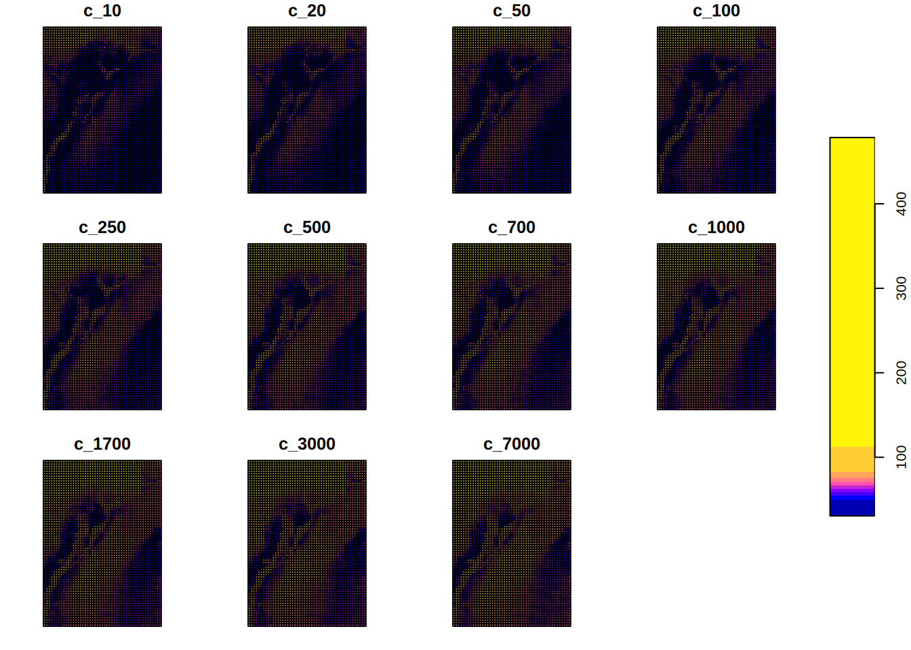
# Ploteo de todos los atributos combinados
# usando stars
ggplot()+
geom_stars(data=combined_st) +
facet_wrap("c_mri")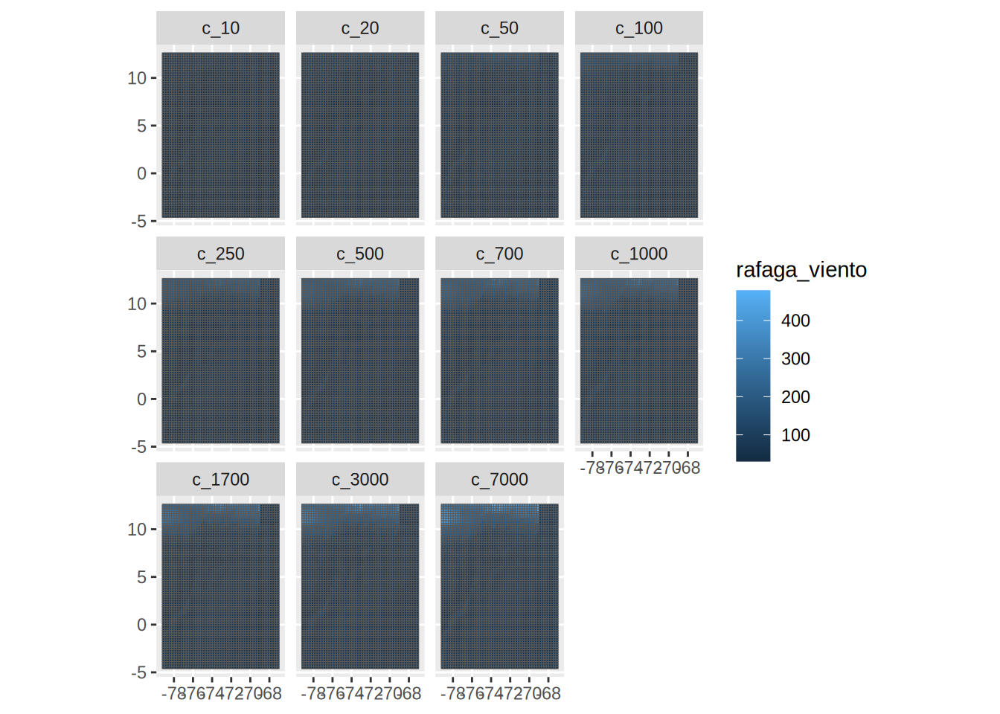
# Filtrado dinámico dentro del flujo de ggplot
# Nota: Usar "c_700" (valores almacenados en la dimensión)
# Nota: filter requiere librería cubelyr
# (no instalada en el contenedor)
# ggplot() +
# geom_stars(data = combined_st %>% filter(c_mri == "c_700")) +
# scale_fill_viridis_c(name = "Velocidad\n(Km/h)", option = "magma") +
# theme_minimal() +
# labs(
# title = "Amenaza Combinada (huracane + no-huracane)",
# subtitle = "Periodo de retorno 700 años"
# )
# Uso de slice indicando el nombre de la dimensión y el índice numérico
# Si 700 es el séptimo valor en mri_c = c(10, 20, 50, 100, 250, 500, 700...)
combined_st_700 <- slice(combined_st, along = "c_mri", index = 7)
ggplot() +
geom_stars(data = combined_st_700) +
scale_fill_viridis_c(option = "magma") +
theme_minimal()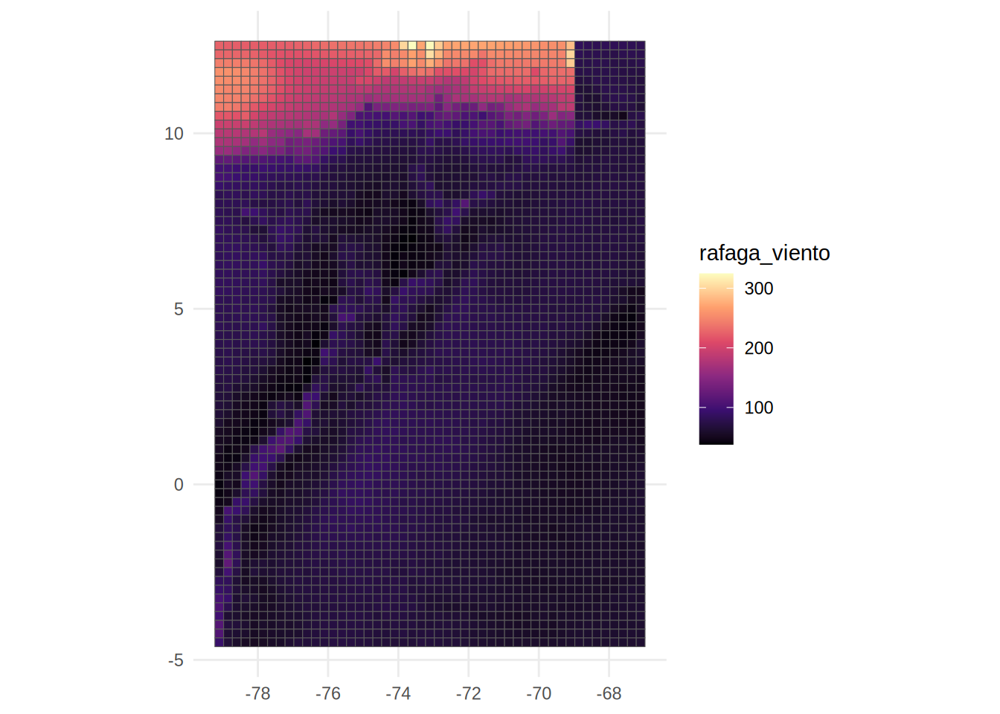
# Conversión del cubo vectorial a formato largo sf
sf_combined <- st_as_sf(
combined_st,
as_points = FALSE,
merge = FALSE,
long = TRUE
)
head(sf_combined)Simple feature collection with 6 features and 2 fields
Geometry type: POLYGON
Dimension: XY
Bounding box: xmin: -79.225 ymin: 12.375 xmax: -77.725 ymax: 12.625
CRS: NA
c_mri rafaga_viento geometry
1 c_10 80.73873 POLYGON ((-79.225 12.625, -...
2 c_10 81.19895 POLYGON ((-78.975 12.625, -...
3 c_10 82.40477 POLYGON ((-78.725 12.625, -...
4 c_10 82.96593 POLYGON ((-78.475 12.625, -...
5 c_10 83.88777 POLYGON ((-78.225 12.625, -...
6 c_10 84.40800 POLYGON ((-77.975 12.625, -...tail(sf_combined)Simple feature collection with 6 features and 2 fields
Geometry type: POLYGON
Dimension: XY
Bounding box: xmin: -68.475 ymin: -4.625 xmax: -66.975 ymax: -4.375
CRS: NA
c_mri rafaga_viento geometry
37186 c_7000 66.09069 POLYGON ((-68.475 -4.375, -...
37187 c_7000 66.18142 POLYGON ((-68.225 -4.375, -...
37188 c_7000 68.91428 POLYGON ((-67.975 -4.375, -...
37189 c_7000 66.85186 POLYGON ((-67.725 -4.375, -...
37190 c_7000 67.17714 POLYGON ((-67.475 -4.375, -...
37191 c_7000 67.64552 POLYGON ((-67.225 -4.375, -...colnames(sf_combined)[1] "c_mri" "rafaga_viento" "geometry" # Visualización usando geom_sf para un renderizado riguroso de polígonos
ggplot(data = sf_combined) +
geom_sf(aes(fill = rafaga_viento), color = NA) +
facet_wrap(~ c_mri, ncol = 3) +
scale_fill_viridis_c(name = "Velocidad\n(Km/h)", option = "magma") +
theme_minimal() +
# Ocultar coordenadas para mayor limpieza visual
theme(axis.text = element_blank()) +
labs(title = "Vientos extremos (huracane + no-huracane)")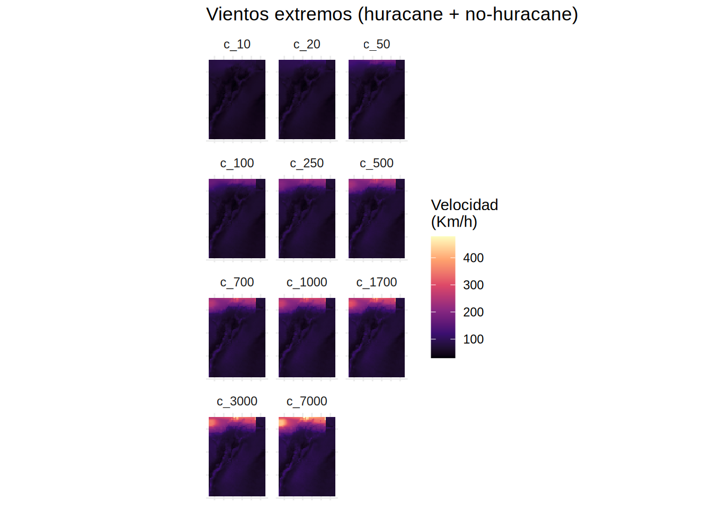
# # Conversión de la dimensión 'c_mri' en stars
# a múltiples atributos
# Not working: a bug?
# combined_st_attrs <- split(combined_st, "c_mri")
# Conversión del cubo a formato ancho
# (una columna por cada periodo de retorno)
sf_combined_wide <- st_as_sf(
combined_st,
as_points = FALSE,
merge = FALSE,
long = FALSE
)
# Verificación de la estructura tabular resultante
# Debería mostrar las 11 columnas de periodos de retorno
# más la columna geometry
names(sf_combined_wide) [1] "c_10" "c_20" "c_50" "c_100" "c_250" "c_500"
[7] "c_700" "c_1000" "c_1700" "c_3000" "c_7000" "geometry"# Convertir sf ancho a stars
# Reconversión a cubo de datos (ahora estructurado por atributos)
combined_st_attrs <- st_as_stars(sf_combined_wide)
# # Verificación de la nueva estructura
print(combined_st_attrs)stars object with 1 dimensions and 11 attributes
attribute(s):
Min. 1st Qu. Median Mean 3rd Qu. Max.
c_10 30.59398 47.32365 55.10004 56.38038 62.64694 93.66784
c_20 31.81944 49.29675 57.76510 59.44482 65.48180 134.17278
c_50 33.26477 51.80405 60.92374 65.05527 68.97079 188.41439
c_100 34.55717 53.77472 63.37895 70.11184 71.93368 217.44337
c_250 35.91330 56.43309 66.34858 76.84945 75.85305 262.64536
c_500 37.37326 58.55547 68.73313 81.93755 78.79750 302.82607
c_700 37.91354 59.53131 69.73639 84.43080 80.10125 324.56443
c_1000 38.39220 60.65315 70.92808 87.15010 81.76703 349.32248
c_1700 38.95457 62.15541 72.80064 91.28766 83.97476 389.73707
c_3000 39.69297 63.81977 74.79913 95.86459 86.67222 437.99241
c_7000 40.43278 66.00681 77.46043 102.88945 90.49137 478.45761
dimension(s):
from to point
geometry 1 3381 FALSE
values
geometry POLYGON ((-79.225 12.625,...,...,POLYGON ((-67.225 -4.375,...names(combined_st_attrs) [1] "c_10" "c_20" "c_50" "c_100" "c_250" "c_500" "c_700" "c_1000"
[9] "c_1700" "c_3000" "c_7000"# # 1. Extracción del atributo y conversión a objeto sf
sf_c_700 <- st_as_sf(combined_st_attrs["c_700"])
# 2. Generación del mapa topológico
ggplot(data = sf_c_700) +
geom_sf(aes(fill = c_700), color = NA) +
scale_fill_viridis_c(name = "Velocidad\n(Km/h)", option = "magma") +
theme_minimal() +
labs(
title = "Amenaza combinada (huracán + no huracán)",
subtitle = "Periodo de retorno 700 años"
) +
theme(axis.text = element_blank()) # Limpieza de ejes coordenados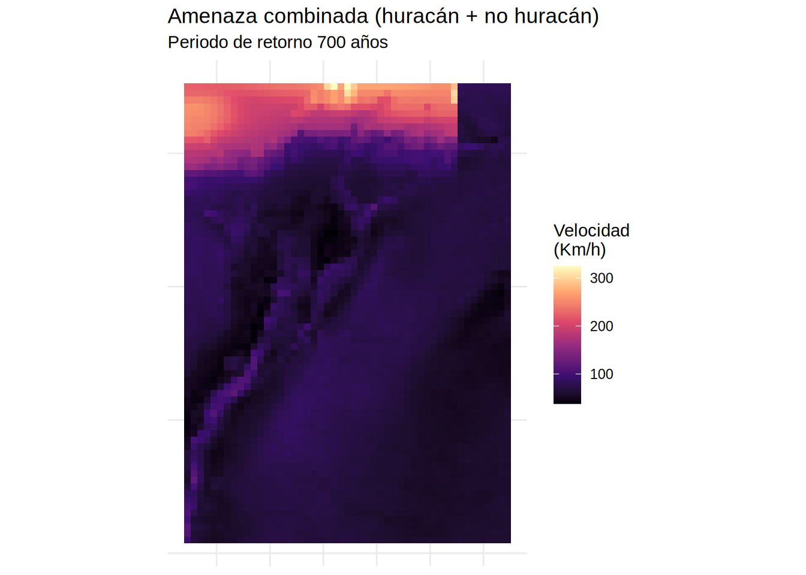
# #| eval: false
# Carga de librerías requeridas
# library(sf)
# library(stars)
# library(ggplot2)
# library(dplyr)
graficar_curva_amenaza_celda <- function(data_base, data_combinada = NULL, cell_index = NULL, long = NULL, lat = NULL, tipo_curva = "completa") {
# Validación de parámetros de entrada funcionales
if (!(tipo_curva %in% c("original", "completa"))) {
stop("Error: El parámetro tipo_curva debe definirse como 'original' o 'completa'.")
}
# ==============================================================================
# 1. Resolución espacial y determinación del índice de la celda (idx)
# ==============================================================================
# La función admite consulta por coordenadas geográficas o por índice directo.
if (!is.null(long) && !is.null(lat)) {
# Transformación del par de coordenadas a una geometría sf puntual,
# heredando el Sistema de Referencia de Coordenadas (CRS) del objeto stars.
punto_consulta <- st_sfc(st_point(c(long, lat)), crs = st_crs(data_base))
# Extracción del arreglo de geometrías del cubo espacial.
geometrias <- st_get_dimension_values(data_base, "geometry")
# Búsqueda topológica del polígono/celda más cercano al punto de consulta.
idx <- as.integer(st_nearest_feature(punto_consulta, geometrias))
} else if (!is.null(cell_index)) {
# Asignación directa si se provee el identificador posicional.
idx <- cell_index
} else {
stop("Error: Se requiere especificar un cell_index o un par de coordenadas (long, lat).")
}
# ==============================================================================
# 2. Extracción indexada de datos de entrada (Objeto data_base)
# ==============================================================================
# Control de dimensionalidad: los objetos stars pueden transponer sus dimensiones
# (atributos vs. geometría) dependiendo de manipulaciones previas como merge() o st_apply().
dimensiones_base <- dim(data_base)
# Verificación: Si las geometrías están en las filas (posición 1), se extrae por fila.
# De lo contrario, se extrae por columna. Evita el error "subscript out of bounds".
if (names(dimensiones_base)[1] == "geometry") {
v_base <- as.numeric(data_base[[1]][idx, ])
} else {
v_base <- as.numeric(data_base[[1]][, idx])
}
# Descomposición del vector base (34 posiciones teóricas provenientes de st_nh_h_c_merged)
id_celda <- v_base[1] # Posición 1: Identificador de la celda (cellindexlr)
v_nh <- v_base[2:12] # Posiciones 2-12: Velocidades viento no huracanado
v_h <- v_base[13:23] # Posiciones 13-23: Velocidades viento huracanado
# Vector constante con los periodos de retorno estandarizados para el análisis
mris <- c(10, 20, 50, 100, 250, 500, 700, 1000, 1700, 3000, 7000)
# Determinación del centroide de la celda para etiquetado en el gráfico y nomenclatura
coords <- st_coordinates(st_centroid(st_geometry(st_as_sf(data_base))[idx]))
lon_val <- round(coords[1], 4)
lat_val <- round(coords[2], 4)
# ==============================================================================
# 3. Configuración topológica del sistema de coordenadas cartesianas
# ==============================================================================
# Se implementa un eje dual utilizando la transformación matemática P = 1 / T.
# dup_axis() obliga al eje superior a alinear sus marcas (ticks) con el eje inferior,
# modificando únicamente el texto a renderizar mediante la función anónima en 'labels'.
escala_x_dual <- scale_x_continuous(
limits = c(0, 10000),
sec.axis = dup_axis(
name = "Probabilidad anual de excedencia",
labels = function(x) {
# Prevención de división por cero en el límite inferior del eje (T=0)
res <- ifelse(x <= 0, NA, 1 / x)
format(res, scientific = FALSE, digits = 3, drop0trailing = TRUE)
}
)
)
# ==============================================================================
# 4. Estructuración relacional de datos para renderizado geométrico (ggplot2)
# ==============================================================================
# La disociación entre df_lineas y df_puntos permite aplicar estéticas (aes)
# diferenciadas por capa. Específicamente: no plotear puntos para la curva combinada.
if (tipo_curva == "original") {
# Preparación de dataframes excluyendo resultados procesados.
df_lineas <- data.frame(
velocidad = c(v_nh, v_h),
periodo_retorno = rep(mris, 2),
tipo = factor(rep(c("No huracanes", "Huracanes"), each = 11),
levels = c("No huracanes", "Huracanes", "Combinada"))
) |> filter(!is.na(velocidad))
# En modo original, los puntos coinciden exactamente con las líneas.
df_puntos <- df_lineas
titulo_grafico <- paste("Curvas de amenaza originales - Celda", id_celda)
prefijo_archivo <- "amenaza_original"
} else if (tipo_curva == "completa") {
# Restricción de ejecución: el objeto resultante de st_apply es obligatorio aquí.
if (is.null(data_combinada)) {
stop("Error: Para graficar la curva completa se requiere proveer el objeto data_combinada.")
}
# Lectura estricta de resultados combinados generados por st_apply (combined_st).
# Se aplica el mismo control de dimensionalidad que al objeto base.
dimensiones_c <- dim(data_combinada)
if (names(dimensiones_c)[1] == "geometry") {
v_c <- as.numeric(data_combinada[[1]][idx, ])
} else {
v_c <- as.numeric(data_combinada[[1]][, idx])
}
# Consolidación de los tres regímenes en el dataframe para trazar geometrías de línea
df_lineas <- data.frame(
velocidad = c(v_nh, v_h, v_c),
periodo_retorno = rep(mris, 3),
tipo = factor(rep(c("No huracanes", "Huracanes", "Combinada"), each = 11),
levels = c("No huracanes", "Huracanes", "Combinada"))
) |> filter(!is.na(velocidad))
# Filtrado lógico: Se excluyen los registros etiquetados como "Combinada"
# del dataframe que alimentará geom_point(), suprimiendo así los nodos en la gráfica.
df_puntos <- df_lineas |> filter(tipo != "Combinada")
titulo_grafico <- paste("Curvas de amenaza completas - Celda", id_celda)
prefijo_archivo <- "amenaza_completa"
}
# ==============================================================================
# 5. Trazado del lienzo y exportación a memoria no volátil
# ==============================================================================
p <- ggplot() +
# Capa 1: Trazado de trayectorias (df_lineas contiene las 3 componentes si tipo = "completa")
geom_line(data = df_lineas, aes(x = periodo_retorno, y = velocidad, color = tipo), linewidth = 1, na.rm = TRUE) +
# Capa 2: Trazado de nodos de referencia (df_puntos NO contiene la componente combinada)
geom_point(data = df_puntos, aes(x = periodo_retorno, y = velocidad, color = tipo), size = 2.5, na.rm = TRUE) +
# Configuración de ejes y atributos visuales
escala_x_dual +
labs(
title = titulo_grafico,
subtitle = paste("Coordenadas:", lon_val, ",", lat_val),
x = "Periodos de retorno (Años)",
y = "Velocidad de ráfaga (Km/h)",
color = "Componente"
) +
theme_minimal()
# Control de directorio y almacenamiento del binario gráfico (.png)
if(!dir.exists("imagenes")) dir.create("imagenes")
nombre_archivo <- paste0("imagenes/", prefijo_archivo, "_lon", lon_val, "_lat", lat_val, "_idx", id_celda, ".png")
# Exportación con parámetros de alta resolución para reportes técnicos (dpi = 300)
ggsave(nombre_archivo, plot = p, width = 8, height = 6, dpi = 300)
# Se retorna el objeto 'p' por si se requiere manipulación posterior en el entorno.
return(p)
}
# graficar_curva_amenaza_celda <- function(data_base, data_combinada = NULL, cell_index = NULL, long = NULL, lat = NULL, tipo_curva = "completa") {
# if (!(tipo_curva %in% c("original", "completa"))) {
# stop("El parámetro tipo_curva debe ser 'original' o 'completa'.")
# }
# # 1. Localización espacial
# if (!is.null(long) && !is.null(lat)) {
# punto_consulta <- st_sfc(st_point(c(long, lat)), crs = st_crs(data_base))
# geometrias <- st_get_dimension_values(data_base, "geometry")
# idx <- as.integer(st_nearest_feature(punto_consulta, geometrias))
# } else if (!is.null(cell_index)) {
# idx <- cell_index
# } else {
# stop("Se requiere especificar un cell_index o coordenadas (long, lat).")
# }
# # 2. Lectura estricta de datos base (st_nh_h_c_merged)
# dimensiones_base <- dim(data_base)
# if (names(dimensiones_base)[1] == "geometry") {
# v_base <- as.numeric(data_base[[1]][idx, ])
# } else {
# v_base <- as.numeric(data_base[[1]][, idx])
# }
# id_celda <- v_base[1]
# v_nh <- v_base[2:12]
# v_h <- v_base[13:23]
# mris <- c(10, 20, 50, 100, 250, 500, 700, 1000, 1700, 3000, 7000)
# coords <- st_coordinates(st_centroid(st_geometry(st_as_sf(data_base))[idx]))
# lon_val <- round(coords[1], 4)
# lat_val <- round(coords[2], 4)
# # 3. Configuración del eje dual
# escala_x_dual <- scale_x_continuous(
# limits = c(0, 10000),
# sec.axis = dup_axis(
# name = "Probabilidad anual de excedencia",
# labels = function(x) {
# res <- ifelse(x <= 0, NA, 1 / x)
# format(res, scientific = FALSE, digits = 3, drop0trailing = TRUE)
# }
# )
# )
# # 4. Construcción de conjuntos de datos disociados para capas geométricas
# if (tipo_curva == "original") {
# df_lineas <- data.frame(
# velocidad = c(v_nh, v_h),
# periodo_retorno = rep(mris, 2),
# tipo = factor(rep(c("No huracanes", "Huracanes"), each = 11),
# levels = c("No huracanes", "Huracanes", "Combinada"))
# ) |> filter(!is.na(velocidad))
# df_puntos <- df_lineas
# titulo_grafico <- paste("Curvas de amenaza originales - Celda", id_celda)
# prefijo_archivo <- "amenaza_original"
# } else if (tipo_curva == "completa") {
# if (is.null(data_combinada)) {
# stop("Para graficar la curva completa se requiere proveer el objeto data_combinada.")
# }
# # Lectura estricta de resultados combinados (combined_st)
# dimensiones_c <- dim(data_combinada)
# if (names(dimensiones_c)[1] == "geometry") {
# v_c <- as.numeric(data_combinada[[1]][idx, ])
# } else {
# v_c <- as.numeric(data_combinada[[1]][, idx])
# }
# df_lineas <- data.frame(
# velocidad = c(v_nh, v_h, v_c),
# periodo_retorno = rep(mris, 3),
# tipo = factor(rep(c("No huracanes", "Huracanes", "Combinada"), each = 11),
# levels = c("No huracanes", "Huracanes", "Combinada"))
# ) |> filter(!is.na(velocidad))
# # Exclusión de la capa combinada en el mapeo de puntos
# df_puntos <- df_lineas |> filter(tipo != "Combinada")
# titulo_grafico <- paste("Curvas de amenaza completas - Celda", id_celda)
# prefijo_archivo <- "amenaza_completa"
# }
# # 5. Generación de gráfico directo mediante inyección en geoms específicos
# p <- ggplot() +
# geom_line(data = df_lineas, aes(x = periodo_retorno, y = velocidad, color = tipo), linewidth = 1, na.rm = TRUE) +
# geom_point(data = df_puntos, aes(x = periodo_retorno, y = velocidad, color = tipo), size = 2.5, na.rm = TRUE) +
# escala_x_dual +
# labs(
# title = titulo_grafico,
# subtitle = paste("Coordenadas:", lon_val, ",", lat_val),
# x = "Periodos de retorno (Años)",
# y = "Velocidad de ráfaga (Km/h)",
# color = "Componente"
# ) +
# theme_minimal()
# if(!dir.exists("imagenes")) dir.create("imagenes")
# nombre_archivo <- paste0("imagenes/", prefijo_archivo, "_lon", lon_val, "_lat", lat_val, "_idx", id_celda, ".png")
# ggsave(nombre_archivo, plot = p, width = 8, height = 6, dpi = 300)
# return(p)
# }# #| eval: false
graficar_ubicacion_celda <- function(data_base, cell_index = NULL, long = NULL, lat = NULL, path_raster = "./data_heavy/col2.tif", sf_poligono = NULL) {
# 1. Identificación de la celda objetivo
if (!is.null(long) && !is.null(lat)) {
punto_consulta <- st_sfc(st_point(c(long, lat)), crs = st_crs(data_base))
geometrias <- st_get_dimension_values(data_base, "geometry")
idx <- as.integer(st_nearest_feature(punto_consulta, geometrias))
} else if (!is.null(cell_index)) {
idx <- cell_index
} else {
stop("Error: Se requiere especificar un cell_index o coordenadas (long, lat).")
}
# 2. Preparación de geometrías vectoriales
# Se extrae la geometría de la malla completa y se aísla la celda de interés
grid_sf <- st_as_sf(st_geometry(data_base))
celda_sf <- grid_sf[idx, ]
# 3. Procesamiento del relieve de fondo con stars
# Lectura del archivo TIF y recorte basado en la extensión de la malla (data_base)
relieve <- read_stars(path_raster)
# Enmascaramiento opcional: si se provee un sf de polígono (ej. Colombia),
# el relieve se recorta y enmascara a esa forma específica.
if (!is.null(sf_poligono)) {
relieve_plot <- relieve[sf_poligono]
} else {
relieve_plot <- st_crop(relieve, st_bbox(data_base))
}
# 4. Construcción del mapa topológico
# Definición de paleta institucional consistente con el código previo
myPalette <- colorRampPalette(rev(RColorBrewer::brewer.pal(11, "YlGn")))
p <- ggplot() +
# Capa de fondo: Relieve (reemplaza la función ggRGB)
geom_stars(data = relieve_plot, alpha = 0.8) +
scale_fill_gradientn(
colours = myPalette(100),
limits = c(0, 255),
guide = "none" # Se oculta la leyenda del relieve
) +
# Capa de malla ERA5 completa
geom_sf(data = grid_sf, colour = "grey", fill = NA, linewidth = 0.1) +
# Resaltado de la celda de análisis en amarillo
geom_sf(data = celda_sf, fill = "yellow", colour = "black", linewidth = 0.3) +
# Configuración de límites espaciales y sistema de coordenadas
coord_sf(xlim = c(-81.25, -64.75), ylim = c(-5, 13), expand = FALSE) +
labs(
title = paste("Reporte de ubicación espacial - Celda", idx),
subtitle = "Visualización de la celda seleccionada sobre relieve y grilla ERA5",
x = "Longitud",
y = "Latitud"
) +
theme_bw() +
theme(
plot.title = element_text(size = 9, face = "bold"),
plot.subtitle = element_text(size = 8),
panel.grid.major = element_line(color = gray(.5), linetype = "dashed", linewidth = 0.1),
panel.background = element_rect(fill = "aliceblue"),
axis.text = element_text(size = 7)
)
# 5. Exportación del archivo binario
if(!dir.exists("imagenes")) dir.create("imagenes")
coords <- st_coordinates(st_centroid(celda_sf))
nombre_archivo <- paste0("imagenes/ubicacion_idx", idx, "_lon", round(coords[1], 2), ".png")
ggsave(nombre_archivo, plot = p, width = 7, height = 7, dpi = 300)
return(p)
}
#| label: r_funcion_mapeo_celda_rgb
#| eval: false
graficar_ubicacion_celda_rgb <- function(data_base, cell_index = NULL, long = NULL, lat = NULL, path_raster = "./data_heavy/col2.tif", sf_poligono = NULL) {
# 1. Identificación topológica de la celda objetivo
if (!is.null(long) && !is.null(lat)) {
punto_consulta <- st_sfc(st_point(c(long, lat)), crs = st_crs(data_base))
geometrias <- st_get_dimension_values(data_base, "geometry")
idx <- as.integer(st_nearest_feature(punto_consulta, geometrias))
} else if (!is.null(cell_index)) {
idx <- cell_index
} else {
stop("Error: Se requiere especificar un cell_index o coordenadas (long, lat).")
}
# 2. Preparación de geometrías vectoriales (grilla ERA5)
grid_sf <- st_as_sf(st_geometry(data_base))
celda_sf <- grid_sf[idx, ]
# 3. Procesamiento del relieve topográfico multibanda
relieve <- read_stars(path_raster)
# Operación de recorte espacial
if (!is.null(sf_poligono)) {
relieve_plot <- relieve[sf_poligono]
} else {
relieve_plot <- st_crop(relieve, st_bbox(data_base))
}
# Transformación analítica de la matriz tridimensional a valores RGB hexadecimales.
# La constante maxColorValue = 255 mapea rásteres estándar de 8-bits.
relieve_rgb <- st_rgb(relieve_plot, maxColorValue = 255)
# 4. Construcción gráfica
p <- ggplot() +
# Capa 1: Renderizado estricto de colores RGB sin aplicar paletas adicionales
geom_stars(data = relieve_rgb) +
scale_fill_identity() +
# Capa 2: Malla vectorial completa
geom_sf(data = grid_sf, colour = "grey", fill = NA, linewidth = 0.1) +
# Capa 3: Resaltado posicional de la celda analizada
geom_sf(data = celda_sf, fill = "yellow", colour = "black", linewidth = 0.3) +
# Encuadre espacial
coord_sf(xlim = c(-81.25, -64.75), ylim = c(-5, 13), expand = FALSE) +
labs(
title = paste("Reporte de ubicación espacial - Celda", idx),
subtitle = "Visualización de la celda seleccionada sobre relieve topográfico RGB",
x = "",
y = ""
) +
theme_bw() +
theme(
plot.title = element_text(size = 9, face = "bold"),
plot.subtitle = element_text(size = 8),
panel.grid.major = element_line(color = gray(.5), linetype = "dashed", linewidth = 0.1),
panel.background = element_rect(fill = "aliceblue"),
axis.text.x = element_text(size = 7, margin = margin(t = 2, b = -10)),
axis.text.y = element_text(size = 7, margin = margin(r = 2, l = -10)),
plot.margin = unit(c(0, 0, 0, 0), "cm")
)
# 5. Volcado a memoria no volátil
if(!dir.exists("imagenes")) dir.create("imagenes")
coords <- st_coordinates(st_centroid(celda_sf))
nombre_archivo <- paste0("imagenes/mapa_ubicacion_idx", idx, "_lon", round(coords[1], 2), ".png")
ggsave(nombre_archivo, plot = p, width = 7, height = 7, dpi = 300)
return(p)
}# #| eval: false
# Ejemplo 1: Graficar utilizando el índice de la celda (cellindexlr)
# data_base: Entradas originales (NH, H)
# data_combinada: Salidas del procesamiento (C)
celda_objetivo <- 1000
p1 <- graficar_curva_amenaza_celda(
data_base = st_nh_h_c_merged,
data_combinada = combined_st,
cell_index = celda_objetivo,
tipo_curva = "completa"
)
print(p1)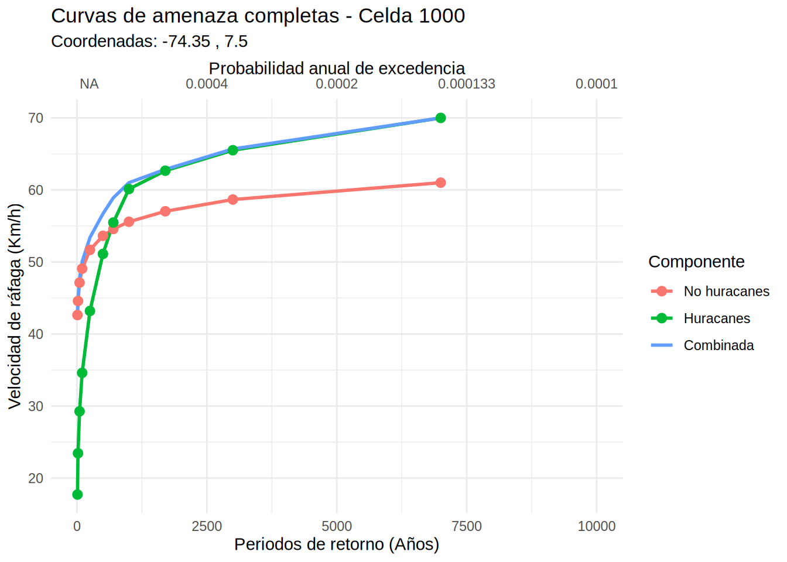
#tipo_curva = "original"
p2 <- graficar_curva_amenaza_celda(
data_base = st_nh_h_c_merged,
data_combinada = combined_st,
cell_index = celda_objetivo,
tipo_curva = "original"
)
print(p2)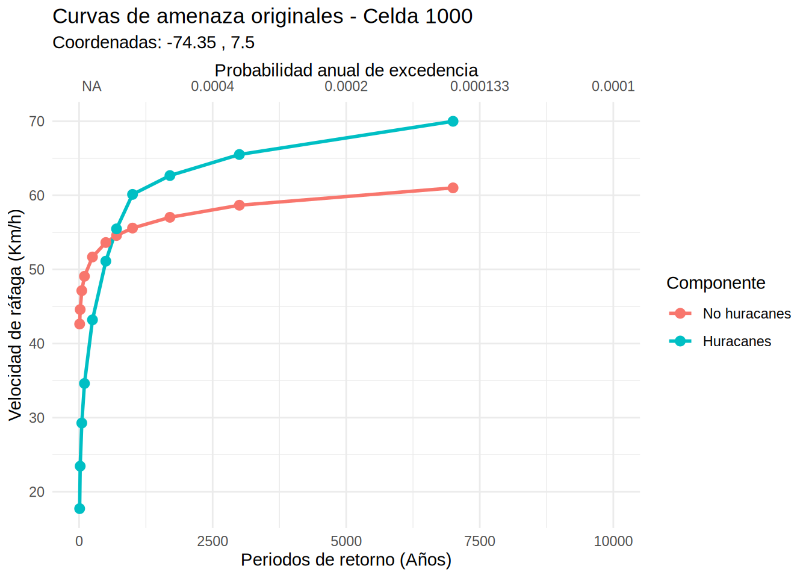
file_col_sf_pol = "./data_heavy/COLOMBIA.shp"
col_4326_sf_pol = st_read(file_col_sf_pol)Reading layer `COLOMBIA' from data source
`/home/rstudio/work/01_prog_sig/data_heavy/COLOMBIA.shp' using driver `ESRI Shapefile'
Simple feature collection with 33 features and 8 fields
Geometry type: MULTIPOLYGON
Dimension: XY
Bounding box: xmin: -81.73562 ymin: -4.229406 xmax: -66.84722 ymax: 13.39473
Geodetic CRS: WGS 84# Generación del mapa de ubicación
p_mapa <- graficar_ubicacion_celda(
data_base = st_nh_h_c_merged,
cell_index = celda_objetivo,
path_raster = "./data_heavy/col2.tif",
sf_poligono = col_4326_sf_pol
)Warning in RColorBrewer::brewer.pal(11, "YlGn"): n too large, allowed maximum for palette YlGn is 9
Returning the palette you asked for with that many colorsprint(p_mapa)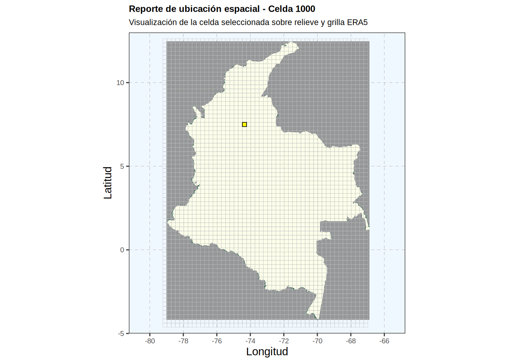
p_mapa2 <- graficar_ubicacion_celda_rgb(
data_base = st_nh_h_c_merged,
cell_index = celda_objetivo,
path_raster = "./data_heavy/col2.tif",
sf_poligono = col_4326_sf_pol
)Warning: Removed 174578 rows containing missing values or values outside the scale range
(`geom_raster()`).print(p_mapa2)Warning: Removed 174578 rows containing missing values or values outside the scale range
(`geom_raster()`).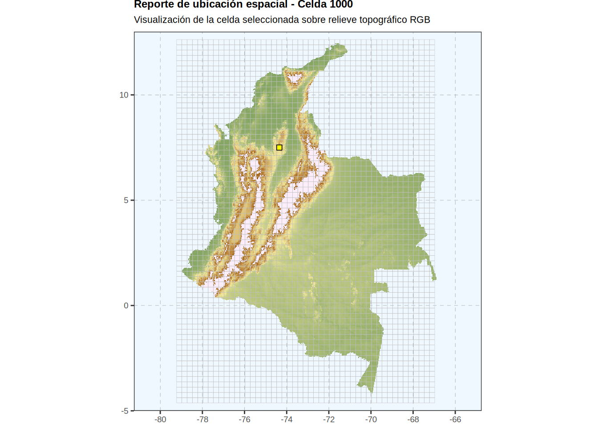
# Ejemplo 2: Graficar utilizando coordenadas específicas (Longitud, Latitud)
# La función encontrará la celda más cercana a ese punto
p3 <- graficar_curva_amenaza_celda(
data_base = st_nh_h_c_merged,
data_combinada = combined_st,
tipo_curva = "completa",
long = -74.08,
lat = 4.60
)
print(p3)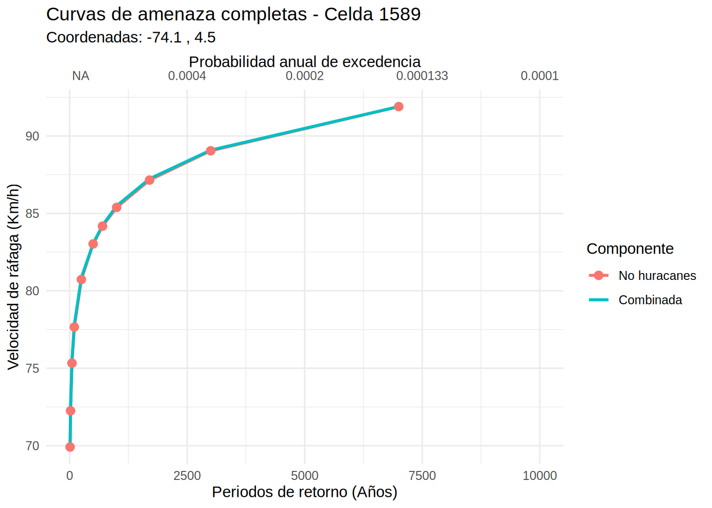
# tipo_curva = "original"
p4 <- graficar_curva_amenaza_celda(
data_base = st_nh_h_c_merged,
data_combinada = combined_st,
tipo_curva = "original",
long = -74.08,
lat = 4.60
)
print(p4)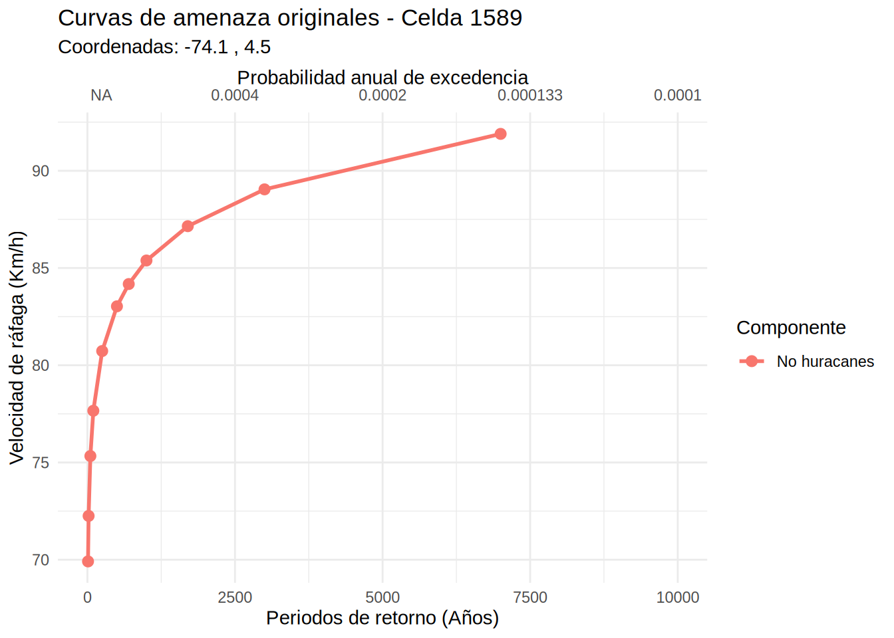
Para poner en práctica los conceptos introductorios abordados en este capítulo, deberás resolver los siguientes dos ejercicios. Puedes elegir resolverlos en Python, R o Julia (o implementar la solución en varios lenguajes si deseas retarte).
Contexto: Estás analizando el comportamiento de las estaciones hidrológicas del IDEAM a lo largo del Río Magdalena. Has recibido el reporte del caudal medio mensual (en metros cúbicos por segundo, \(m^3/s\)) de cinco estaciones clave y necesitas extraer estadísticos básicos y transformar las unidades para un informe ambiental.
Instrucciones de código:
estaciones con los siguientes nombres: "Honda", "Puerto Berrío", "Barrancabermeja", "Puerto Wilches", "Calamar".caudales_m3s con los siguientes valores numéricos: 1500, 2100, 2800, 3200, 4500.caudales_m3s por 1000 y guarda el resultado en una nueva variable llamada caudales_ls. (Asegúrate de no usar bucles for).caudales_ls.Contexto: La Red de Monitoreo de Calidad del Aire de Bogotá ha publicado los datos promedio diarios de Material Particulado 2.5 (\(PM_{2.5}\)). Debes organizar estos datos en una estructura tabular, filtrar las estaciones que presentan riesgos para la salud (según la OMS) y visualizar los resultados.
Instrucciones de código:
df_aire (utilizando la librería adecuada según tu lenguaje: pandas, data.frame o DataFrames.jl) que contenga dos columnas:
estacion: "Carvajal", "Kennedy", "Fontibón", "Suba", "Usaquén"pm25: 55, 42, 38, 15, 12info(), str() o describe()).df_alerta que filtre y contenga únicamente las estaciones donde el nivel de pm25 sea estrictamente mayor a 15.df_alerta llamada estado y asígnale a todas sus filas el valor de texto "Crítico".df_aire), donde el eje X sean las estaciones y el eje Y sean los niveles de \(PM_{2.5}\).El objetivo de esta evaluación no es solo que el código funcione, sino que seas capaz de documentar y explicar las diferencias fundamentales entre lenguajes.
1. Archivos de Código: Debes desarrollar los algoritmos en al menos uno de los siguientes formatos de archivo:
.py, .R, .jl).ipynb).qmd con chunks de código)2. Documento Analítico (Quarto): Independientemente del formato de tu código fuente, debes redactar un documento en Quarto (.qmd) y renderizarlo tanto en HTML como en PDF. En este documento debes incluir tus bloques de código y responder argumentativamente a las siguientes preguntas:
caudales_m3s como una Lista nativa ([1500, 2100...]) y la multiplicas directamente por 1000 (caudales_m3s * 1000). ¿Realizaría la operación matemática deseada? ¿Qué librería de Python soluciona este problema y cómo se diferencia este comportamiento del de R o Julia?3. Repositorio en GitHub: Sube tu carpeta del proyecto (que debe contener tus scripts, el archivo .qmd y los renders finales en HTML y PDF) a un repositorio público en tu cuenta personal de GitHub.